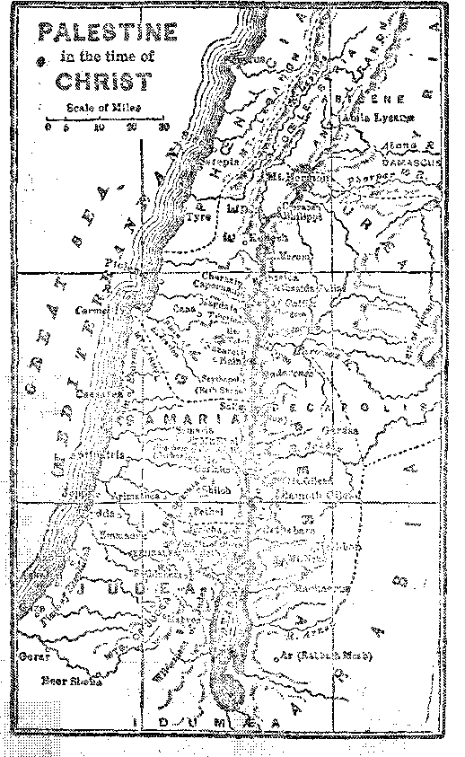

Y ONDEBS OF JORD IN
D4V® 4 PROTOTYPE
DOO BULES SCOTLAND?
ALL THINGS SH ILL BE MADE NE^
INDULGENCES
AT AB LB GUN’
or a copy — $ 100 a Ye ar Canada and Foreign Countries $150
Cl WORLD DYING
Iwoe and courage
Vol. ’■ Ill B’AWekly No. 197 Apul fi, 1®27
NEY
WORLD BEGINNING
r_—7^===========^^ : iiA2L=====^ww=z7T=rSre
Labor and Economics
Conditions in Rumania . • •'-’*
Slavery in Portuguese Africa EEa'A*®
Social and Educational
Jewish Impressions of Bible Students . ■.. . . . . . . . . 428
Things that Endure (Poem) .............. 434
Society Gnm Becomes a Poor Clare ............ 438
Occurrences of Poltergeist .......... .... . 488
Science aid Invention 'Beam Radio Works Perfectly ....... Sweden's Aer;>te<l Cm wrote ........ T in <i r l ' 'Ki i nr 7 . .
Illi I 'I U I 111 I l| . .
TeAVEL AND Ifrrm.ANT
Religion and Philosophy
3lX) Days’ Inisui.gence and Maybe Mors . . . . . • . . . . ,
About Masses for the Dead . . . . . . . . . . . . .
A Pretty Goon Haul . . . . . . . . . . . . . . . .
Teacii.ri. Dies to the Im rm. ioutu ............. . ... .
How Peter Has Changed ................ -1-7 The Lobd's “BrothebS” ................. 4h3 isi.jr Marys in rite .\ow Lewaiiietit ............. . ICtVtD TltE 1'1101014 m ................ . .. —... '.i.
The First Fabmeh and Hrs two Littls Boys . . - . . .
Behold! I Make .-111 Things New
F '.IVi.E QF5i<;?,i*TOEd‘5 AND •zVlMSVl i'.I’S - « • - < » » • ■> « • c » v
i/r- - h ir'njs ipji Izhtie People e .
< i r'>i m “‘The Haep of God” e ........... p 447
Volume VHI
N, Y., Wednesdays, April 8, 1927
Number 197
On Foreign Sliores
[Rti li.v-.wt ii-wa. StJtwc Al BBS on u W3\e ler^jJi 413 1 meters by Ui > Editor.]
Mussolini Will Teach ’’telipiw
THE Nev; York Tn^.s P'i> lliaL wnh the •*• cooperation and approval of the pop^, 'his-s.hini will now cngm. »• in h ? T’b.'ang of religion. Motion pic-une- vj’ be used to foster vehgion^ foelirg, v.Ta'' v~ u that is, and to smvad a knowledge of ih° ait and Met Mure of the p erjiar fem ofi'h; . ’ o wl Mu«-ol'r* ’$ a Idieted. Fascis’ i bm rlm-ady ord -re<« that one rL these films shall on emy movie
pogiam.
4 Sorry Compliment to Italy
John C^ldeii, of the American Management
Mission, writing in Tue Iron Age, says briefly: ‘’Mussolini's whole program is a sorry compliment to the intelligence of the Italian people. It has been decided that above all things they must not think.'5 It would be a good joke if after having made the men do just as lie told them in every little thing the women would trip him up by paying no attention to his orders or wishes respecting their dress, and the chances are that they may do that very thing. Even the pope could not bo>s them in that particular. He continues to fume about 'bort dresses and low necks and short sleeves, but in vain,
Italy's New Reign of Terror
T^OLLOWING the latest attempt upon Mm>— solini's lift, the London P<‘ lg < Wh-iW icy- ris that never, even in the h '-!ory of Fa-vm it. then been t1 roiighout the bmgtb and bi 'dth of Italv stwh sew e- of horror as veto 1h<-( > enacted. Even !“i)n(.si i epvLibh' am! m nt decs >it Italian people were attacked and thmr property destroyed if they were even simper twl of lacking enthusiasm for t*’e Easrisf cause. The demand is nov being made that def ending counsel he denied in political ea»ps, and that the exPremier, Signor Ni.tti, already' in exile, b,e murdered by the first Italian who can waylay him.
Fuseists Caught a’ Their Own Gome
TTTIE Itahmi T.:" d di have been " amht M the1'?
own game. Th-' Manchester (hmto con-tung fl e sk.ix'p nm ;■ d.at E'ocio'ii Garibaldi, seized for i on -girn-g on French sod both agmast Snnin and ?gai<'st Italy, and knovn to Lave organized an abortive attempt agaaiol the Lfe <.£ M”'"' >L' 'v r- mtu'dly in the mnploy of the Italian Fmwi -ti and received his pay from die Inspector G moral of the Italian Police. It is thus evident Liat the Fa-< isti have been trying to invobm France in trouble and got caught at it. It only helps to make a bigger monkey than ever of the wMfle hand-organ castor oil farce. When any government gets so far down in the scale of decency that it has to resort to the i.n-iamous use of agents provocateur, it is a pretty sure sign that it sees the end of its rule in sight. When Mussolini does go, it is the opinion of many that the Italian people will turn suddenly from tyranny to anarchy. This opinion is expressed editorially by the New York World.
Beam Radio Works Perfectly
/j mcoNi’s new system of transmitting radio Iwl waves in a single direction instead of broadcasting them works perfectly, and is now in operation between London and Montreal. This is unquestionably a great step forward and marks the time v.l in the wot Id will he cris-cio^ed by the^e !’adio waves between the wml'l’s important cenmis of population.
Sweden's Aerated Concrete
XTEW YORK at m e time bad a run on aerated T bread, Irat we never hear of it nowadays. The Sv. edes have applied the same principle to concrete. After the concrete has been fixed they blow it full of gas, which fills the finished concrete with Intie holes. This makes the concrete go farther, and it is said u> be fully as strong as if more solid.
Conditions in Rumania
WHILE plenty of Americans were making fools of themselves because the queen of
Rumania was visiting here, and while the papers here told how she was entertained at the White House in garments glittering with jewels from toe to crown, not so much mention wi s made of the fact that the general poverty in Rumania is so great that the Rumanian press itself was ilot permitted to publish the details of the queen’s de luxe trip to America. Seventy percent of the Rumanians are illiterate; wages are 25 cents for a fourteen io sixteen hour day; except on Sunday the Rumanian peasants live on boiled dried corn twinned from the ears, the same as the hogs eat raw. Their shoes consist of rough tanned hides laced around their feet. The queen had a private deck for herself and her retinue of thirty-two persons on the steamer Leviathan on the way here, and the party had baggage enough to fill two Pennsylvania Railroad baggage cars.
Important Astronomical Discovery
ACCORDING to the New York Times two
Swiss scientists, who spent a month living on the top of one of the highest Alpine mountains in Switzerland, have made the important discovery that a certain group of stars sends out radioactive waves stronger than the Roentgen rays. They are hoping to be able to capture these rays and make some use of them.
How the Soldier Got the Necklace
DURING the World War an Austrian soldier, arrested for taking a pearl necklace from the neck of a famou® < hurch statue of the Virgin, olleied the defense that the Virgin had bowed her head, taken the pearls thorn her neck, and given them to him. The court referred the matter to two bi khans who did not wish to admit that the Virgin statue was not a miracle worker, and who admitted that r-ueli a miracle vas possible. What a way to get a necklace!
Great Macedonian Mlgrsdrsn
THE great Macedonian migration, in which hundreds of thousands of Greeks weie removed to Macedonia from Turkey, and o‘her hundreds of thousands of Turks were removed from Macedonia to Tiukey, is pretty well settled at last. The Greeks are thriving in their new home. Athens has doubled m population, and Salonika has tripled. This is the largest migration in eenrr.iies.
Cooperation Spreading Rapidly in Greece
SINCE 1911, when it got its foothold, cooperation has spread so rapidly that in the little country of Greece, which is only the size of West Virginia, there are now 3.655 cooperative societies. one-fourth as many as there are in the whole I ’*ed States. The internal and political condition of Greece is considered greatly improved.
Plain Living Promotes Longevity
lO'OST people dig their glares with their A.VJL teeth. The oldest roan in the world, Zorah, the Constantinople potter, who was 152 years old. on November 15th last, has always had plain food because he could not afford any other. He has never* been a user of liquor or tobacco, and drinks hut little water. He lias used tea for a hundred years or more.
Rail Development in Turkey
CONCESSIONS have jn-t been granted to
Swedish and Belgian capitalists which provide for the construction of 900 miles of much-needed railway in Turkey, in the course of the next five years. The wearing of veils by women has been suppressed by Turkish law, on the sensible grounds that it is unhygienic and also promotes concealment of criminals.
French Administration of Syria
A WRITER in the .Manrimstor Guat diaii, **■ commenting upon tin- eh customs of opening drinking houses and In • ves of prostitution throughout Syria. say»:
I am a •wired by Curavwo new rin BaalNk) f’at there is no quwwn of t’-i w: tv ri the SwA admmvirwtkp of the ( on a-t*' ■ ’ t. ’has the maw a-tmy povci jn Syna. In tn" < am a-vs all the officials are local mm and the &i <t avi j- c< wymed of lo> al men; local aflarr® ace witbo kcalir, nc ihere is oriy one actual Ru<rian cemmitvar. m n i Moscow in the whole area. G Syria the ■ ffic-ris p.,e French, tie bonnev of the Jaw court •’ i« c< rim'd in French; gnj, by the hnll’ant idea of fixe nine< t rn of a local coinage compatible only in Paii®. ibr nedp and industry of the country have been swept ink; Iha ch hands.
Developments in Palestine
TWO large orders of fruit trees have been shipped from Monrovia, California, to Jerusalem, Palestine, recently; and 400,000 vines for the growing of muscatel raisins will be planted in the Holy Land this coming season. Doctor Chaim Weizmann claims that Palestine today is the only peaceful spot m a portion of the world seething with unrest. The Jewish invasion of Palestine, he reminds critics, has been not with guns and gunboats but with spades and. Kbovffis. In sever years JOO 000 Jewish colonists have been brought into the country. The Arabs have been paid millions for their neglected lands. The Jews are making such strides that in a few year'- wore the irrigated areas ahjut Haifa will be one of the show places of the world.
Driving Jews Pack to Palestine
THE Jews who still remain in Poland aie being taxed out of the country. All taxes are assessed by Poles and the taxpayer’s word is never taken. Thousands of the Jews are without relief of any sort, and the only hope for them is emigration to Palestine. These are the view’s of Judge Harry M. Fischer of Chicago, and are supported by the facts. Within three years last past 200.000 Jews who had formerly been in trading and other occupations have become farmers. This is a most encouraging sign. With all his trials, the farmer is the most independent man in the world today. Ue can usually raise enough to get something to eat, anyway.
Growth of the Hebrew University
THE Hebrew University at Jerusalem grows steadily, A new central building is about to be erected which will cost over half a million dollars; Sol Rosenbloom, of Pittsburgh, having left that amount for that purpose. The University will at once undertake to study the system of sacrifices called for by the Jewish law, to endeavor to ascertain their real meaning. This is timely, just what we would expect, and cannot fail to bring great blessings to all.
The Imbeaux Dead Sea. Plan
HPHE Dead Sea is 1292 feet below the level of the Mediterranean. The hill between the two is 382 feet at the lowest point, namely in the valley of Esdraelon or Megiddo, and water cannot be siphoned higher than 32 feet. A tunnel fifty miles long is an expensive undertaking, and yet such a tunnel has been projected; hut now a French engineer, M. Jmbeaux, proposes to carry the waters of the Mediterranean over most of the 382 feet by the novel expedient of pumping. The pou er required to lift great volumes of water to such a height would be mior-mous; but the fall into the Dead Sea is so great that there would he sufficient power thus generated to accomplish this, and enough left over io give Palestine the cheapest and most permanent water power on earth. The water would be pumped from one elevatwn to another I welve times. The canals would be through the cm ter of the richest part of Palestine, practically all of which is now in the hands of Jew’s.
Details of the Imbeaux Plan
HpHE Imbeaux plan for electrifying Palestine involves the construction of a canal with 12
Jocks, gradually rising 382 feet in the valley of Esdraelon. At the summit will be a tunnel 3,300 yards long, beyond which is a drop of 1,200 feet to the Sea of Tiberias, with a further drop of 4.00 feet to the Dead Sea. The gross energy derived would be 617,000 horsepower, of which amount 190,000 horsepower would be needed to pump the water up the twelve elevations. There would be left a net product of 426,000 horsepower, sufficient for all Palestine's power needs. It is believed that the Dead Sea would handle all this extra water by evaporation; but some who have been to Palestine question this, as even the Jordan as it nori is overflows the Dead Sea at times and causes its waters to rise very materially.
The Eickes of Siberia
A RUSSIAN who lived for nineteen years in the State of Washington, but who is now in Siberia and a member of the Siberian executive political committee, states that although the Siberian peasant knov s no better than to dump the stable manure into the creek, yet Siberian fields are incredibly rich. He states that in Siberia there is coal by the billions of tons, rivers teeming with fish and forests with fur-bearing animals. Gold, too, is plentiful. He believes that Siberia is the coming country of the world.
The Fate of the Rhineland
TN THE Yangtse liver in China the steamship •*■ “Rhineland” had a slight collision which opened one of its seams. It was not considered serious at the time; but the water leaked in on a cargo of dried beans, the beans expanded, and ripped the triple riveted steel hull apart, and the steamer sank. Building stones can be quarried by the same method. It is slow but sure.
Britain Wins China Fight
I'pHE fight which Britain has waged off and on for about seventy-five years to fasten, the opium habit upon China has finally proven to be a complete success. A British gentleman, S. Henderson Smith, writing to the London Chtis-tia-n Wot Id from Taiyuan, Shansi, China, says:
The riwatioa is hopAvv Moe- and more opium is grown, weiy jear Jleiphia is smuggled in all over the Noirli. The •victims increase eseis day. It is enteiiiig the college® fo an alarming extent. Boys play with u, raid find, too iale, their careers ace lumed. The Devil smiles belli-*1 the wcncs vhde the. soldiers, merchants, scholar^ and the gieat majordj of officats, high aid lots, smoke or eat opium in some torn or another. They take it like snuff; thei dip tlicir cigaieties tn the pov dcr. All the time new device* aic being discovered. -
The Mossacre at Warihsien
TIWO British ships vitli cargoes of arms and ammunition which they had illegally carried 1,000 imlcs into tl e interior ot China were seized by military autnmities at IVanhsien, as they would have h *m had they attempted to lard a .mm at Loir w Jb or St. Lmfis or Kansas City. Thm-cupm* a B id b naval, vessel ck-P'-d Y’m b-mi’A ’b yarn new '1 mg a COO people. In the meant .at Jni> : ••an r-i .hosts me engaged i’’ the eg* long Av’O/ua.1 wnnpatior of pdlrng Bi’hshi t me-h ,j.s cm ot Lie t;'e. C!~ 't have bee ’ 'wcbm g olshu'.b'’v t- t .can and Clrre*'? b'-ct.-. a 1 of v'l ri. "’s e mw to Fmi. ah r W Aiuri' m . o'wr.'V't,. 'b oegrilao program would b° f r Anieiww "o fin' mo a vm in China, and fvi octhmg cni ot it hat glo.y ?*>d a good in my dml ^meii<‘an hoy*. Bn urn would, of course, v. am nil O* proceeds, and mency to boc+, to the end of time; and if Dfiele Sam should warn any of Lr womy back that twill of com so make him a Shjloc-k. to bo hated m d de.pised in the eostcra world as British propaganda lias made him hated and despised in the western one.
Japan Getting More Imperialistic
THE common people of Japan never have had very much liberty anyway, but henceforth they ’will get less. In the government schools the students are barred from reading any books or periodicals except such as the authorities have approved; students may not make speeches outside the classrooms, even on scientific subjects; they may not study private subjects. It is known that 1,500 students are under government espionage. Hatred of Americans and of all Westerners is being assiduously cultivated.
Courtesies of the Japanese
A HUNDRED young men from Japan spent a two weeks vacation in California., to get hrat-kand information. As some could not rIlford expensive steamer accommodations all the party, including squs of the wealthy, came by steerage. At a place where the group v.as photographed, American employes began removing to an upper floor the chairs no longer needed. Without a but each student picked up his chair and carried it upstairs. At tin’s time one b* y was overheatd io v.hisper to another, “Do nothing that will shame Japan.”
A Prodigious Storm in China
THE atori’s in the Chinese seas uio lam-, "g, A but they have just had ope that suipawcs. Sixty miles south of Hongkong thole is a lighthouse, t’»e snmimt ci which .s 140 feet cflvve high water, in a recent aoun the copmg stem s on the tpp of this light* ouse vere v. a -hod eri by the trcmei'dou, wan3;, and eight of the ha’i-iuch-ileck lenses in the 1'ghLng airau^A wcic a'-o biokcn.
ECeetrx ^;gL.is in
~Q EJORT has >1 that fw nu v sounded ;
Av ot- cat th, If t w, the “Vo hiddui L v A Tin jet, is now Iwliicd by elec ? liahw. L all ea^e t.l ot'f in the m^st ret»nal way. A . mg nvn of ‘he c ly v-imleiad Lk> adim twqi'ied an education, retimed and 1 ,rnested one of the waterfalls in the neighbor1 cod cf J w home city, secured permission of the Grand Lama of Buddbodom, instrl'ed. the sppmatus; and now the (Hand La m will have sometliing more ef-ficent than butler balls to 'lluminate his palace. Surely the world docs move.
Slavery in Portuguese Africa
THE Nation lias gathered and published all the proofs anybody could wish that the Portuguese government not only treats the natives of Portuguese West Africa as slaves but treats them so brutally that hundreds of them are starved to detoh, and the land is being rrmdly depopulated. Pour-fiAhs of the taxes of the country are paid by the natives, who are compelled tn labor rue hrmcied days of every yejf <o pay tLrir ti'V*. Ka ■> Ing paid their taxes to these Cl Hsutr. ecn.'nren who hive taken their count/y tLm then J sate die rig1 t to work for other wl ,te uim at a dn’b* wago of three cents. The tax is levied on bw^ as young as s«ven years of agm Not being able to live on the wage3 given them the natives are dying of starvation by whole colonies. It will now be in order for hit. Kipling to write pome poetry showing how Portugal is manfully taking up tho white man’s burden.
The Charleston a Kaffir Kance
ERSONS familiar with the customs of the
Kaffirs and Bantus in South Africa declare that the supposedly modern Charleston dance is nothing more nor less than a dance which has been practised by South African negroes from time immemorial. Department stores in Johannesburg warn all employes against practising Charleston steps behind the counters and thus lowering white supremacy in the eyes of the natives.
4 New Mountain Two Miles High
NEW mountain two miles high has been discovered, but it will be a long time before it will be of any trouble to aviators, because the top of it is still three-quarters of a mile below the surface of the South Atlantic ocean. The cable was found xwo miles nearer the surface than when it was laid hventy-seven years ago.
Sardinian Coal and Iron
ONE would suppose that in the famous little island of Sardinia all the minerals would have long since been discovered ; but now comes the news of a new coal field cstmiatod to contain 30,000.000 toi s, and a neai’w iron field which will probably give over 81.000 090 tons of ore. A local cox.ipauy Las been ferried, to exploit the properties. Foreign capital was refused.
fririaa a Source of Paper
AUBOO, which, lia^ Ufiierto been regarded as a weed and a nw-wnce in the countries where it is indigeimuj. will hereafter be the source of the world's paper s'my’y. This word, comes from Tnd;a, where expenments conducted for the pa.it fifteen years have finally disclosed the right method of handling the stubborn material. The paper will be unusually tough.
Cobham’s Trip io A.ustralia
THE actual flying time of Alan Cobham, from Britain to Australia and back, was 13 days 8 hours; so the trip may be said to presage the time when, people who are in a hurry will be able to get half around the world in a week. The return trip from Australia to Britain, including all stops enroute, was made in just one month. Britain gave the fliers the most enthusiastic welcome imaginable on their return.
Australia Sends an Envoy

USTRALIANS were determined to celebrate their new position in the British Empire by sending an envoy to the United States at once. The new commissioner, Sir Hugh R. Denson, was immediately named and put on the job forthwith. Australia and the United Stales have such great mutual interests in the Pacific that this move could hardly be longer delayed.
The Tallest Structure By B. S. Sckleui 'vfi
fpHE RCA tower at Tuckerton, N. J., isjhe tallest structure in the United States, being
■865 feet Iurii, and 1.00 feet taller than the Wool-
worth Budding.
Aside from this tower there are thirteen 550 foot towers supporting the antennae of several high-power, transoceanic transmitters, usuI for commercial traffic to various European and South American points. Radio is greatly overtopping the cathedral spires of Christendom.
Something About Scotland By D„ L. Cranston (Scotland^
SCOTLAND, a land of beautiful seeiyiy, is dear to the heart of every Scotsman. The schoolbooks of Scottish schools abound with stories of how, in heroic maimer, Scotland and Scotsmen obtained freedom from the yokes of their enemies. The “patriotic” Scotsman is promt of hi s country’s history.
Bui there are certain items of real import, generally withheld from the majority, which reveal that the Scottish people are in a bondage woi.j. tlia.li that of their enemies from which they broke free in the past, and which items also reveal that Scotland does not belong to the Scottish people.
In the light of certain facts such expressions as ‘"our country'’, “oor ain eountrie,” eta, in reference to Scotland by Scotsmen, are meaningless. Scotland belongs to a privileged few.
The story is told of the Scotsman who, in conversation with the American, said that America was not much of a place to live in because it had no nobility. ‘‘What is nobility?” asked the Yank. “Oh well, gentlemen who do not work,” was the reply. “Oh,” said the Yank, “we have them, hut we call them tramps.”
The majority of Scottish nobility live in ease and luxury by reason of their possessing land which in the past was stolen from the people. In the 11th century Britain, including Scotland, had the privilege of a visit from one known as “William the Conqueror” accompanied by a mimber of henchmen and retainers. Many today boast of their descent from those who came over with the Conqueror. A book, “Our Noble Families,” says:
The history books of out school days supplied us with many fiction--, but <m no part of our nr.tinnal records life, o they woiei!. more I’idstuhnis iioiisewe than on the Norman concpifA William die Corqueror is represented as landing at Hastings with the chnalry and nobility ol France at bis back< . . •
Alas that I should shatter a delusion, but it is necessary that the truth be told. The Norman conquerors were not mostly “of blue blood’’; they were, as Mc-Kenlle the hi-dorian juotly says, “the sewn of France”; they were led by one William, stuuamed the Conqueior, who was an illegitimate son of a Duke of Normandy, by the daughter of a tanner in Falai«e, and they simply murdered, dabbed and grabbed their way to aSuenee.
This same hook shows that the ancestors of our Scots noble families stole, murdered, bribed anti reported to every evil, immoral and dishonest practice to secure the land which they now possess, which land they tax the people of Scotland for the privilege of living upon. Their greed for possession seems to have been insatiable. Very few of them appear to have had any deceucy or honesty whatsoever. They have treated the common people as slaves or worse than slaves. They have received titles and honors from profligate kings. But, as Scotland's national poet says:
A prince can mak’ a belted knight, A marqui®, duke, an’ a’ that;
But an b.oneA man’s aboon his might, Guid faith he manna fa' that.
The nobility have dishonestly and fraudulently used government and public offices for their own enrichment. They have brought untold sufferings to the people. An example of thi« is the clearance of the crofters (those who rented small pieces of land for farm-crofts) from the land in Sutherlandshire, because the then Duke of Sutherland saw that it would be more profitable for himself to rent out the land for large sheep-farms. A brief account of this is given in the work, “Our Noble Families”:
Huge farms were deemed more profitable to the landlord than small crofts; and in several parishes, the crofting population got notice to “clear out”. Ciops were standing limit in many eases; the houses had ell been built by the tenants or their ancestors; and they, the tenants, had nowhere else to go.
It is true that many of the tenants were offered “al-lotxnentb” on the barren seashore: it is true that they were given the privilege of gathering whelks for food, and of fishing in the rcugh seas of the outer main if they could lav Ihoir bauds on sufficient- money io marebase a boat. Still they had no money for boat pv.r-chasing.-: they had no desire to leave their almost the ctops at a landlord's whim, and betake themselves avay irom the family croft on the ancestral strath to make com grow on soa-shmgle!
They thought that their homes were their own; an,I that, having improved it, tiny had some rights in the soil and in the growing crops. Alas [ Down swept we Apaches from Dunrobin Cadle; whole parishes were “cleared”, roof trees pulled down; and the little emits, and frequently the miserable furniture, were committed to the flames, with the women and children weeping by the loadside.
Tn one er tv, o cases the pillagers did not even trouble to leruove sick persons before setting fire to the thatch;
women almost in childbirth were thrown on the roadside ; mm—red. hopeless min-—everywhere: cruelties and savageries almost unmentionable and unbelievable, clouds of smoke filling the valleys; and the peasantry, tha had been a counfiy's pride, were hunted and driven, ragged and. homeless, to a barren eoast.
James Macdonald, w-tired revenue officer, in hi> evidence before the Crofters’ Commission in 3884. said, beside other things:
Other cottages I have seen in the act cf being de-nwhihed. leveled with the gionnd; and I have seen the people, who have occupied them, for days without shelter, bundled together at dykesides, and roadsides and on the beach, waiting for the arrival of ships to carry them fciM the Atlantic, or whereter they were forced to go.
I hare a distinct recollectkni of seeing a notice that ww i ued simultaneously with those proceedings, posted upon the door of the parish church, iatimat.ng that any per--on who was known to have given shelter to, or to base uarbored am of the evicted people, would, m turn, without any warning, be summarily ejected fremhisor her ran house, and be compelled to leave the country: and the harsh decree applied irrespective of any ties of relationship whatsoever.
These things took place during the early part of the 19th century, in a so-called Christian land; and are but samples of other like proceedings.
Lest we should be too severe on such noble (?) people, we must recognize that they are but the victims of the present evil order. Brought up from childhood to believe that they are superior to others of the human race, and that they are specially chosen of God to have dominion over others, their reason is necessarily warped, and twisted.
But greater is the responsibility of those who, while claiming to be God's representatives and ministers of His Word, have taught the people to reverence and worship the privileged few as a divine right. They have hailed such an institution as Christendom instead of pointing out ta the people that it is Devildom.
But such an order is now come to its end and is in process of passing away. The present world trouble, clearly in fulfilment of prophecy, is proof that the reign of the King of kings has begun, who. in the battle of Armageddon ahead, will destroy this present satanic order.
We often hear cries of “Egypt for the Egyptian”, ‘'‘India for the Indian,” “Ireland for the Irish,'3 etc. With these sentiments we can but concur. For who have better rights to the blessings of Egypt than the Egyptians, of India than the Indians, and of Ireland than the Irish? So why not “Scotland for the Scotsman”?
But God's kingdom, the time for whose establishment has come, will bring all these things to pass—and more; for it is written: “The heavens are the Lord’s but the earth hath he given to the children of men”—not to a privileged few.
PROBABLY some of our readers would like to know how to get 300 days’ indulgence; so here goes. It’s simple. First, be sure to get a set of beads. Better get two while yon are at iff one big set and a little one. But be sure to buy your beads from the proper dealers. Now on the big beads yon say, “Eternal Father, I offer thee the wounds of our Lord Jesus Christ —to heal the wounds of our souls." That's all there is to it—and ynu get the 300 days’ indulgence the first crack. And each time you repeat it you get 300 days more! It counts up fast.
Then you can begin all over again on the small beads, and isay, “My Jesus, pardon and mr-rey—through the merits of Thy Holy Wounds ” and you will get 3(f0 days’ iwiulgo.ee again; and each time you say it you get 300 days more. It isn’t 299 or 301. It’s all most carefully figured out so as to land you just a good even 300.
This is all up-to-date stuff, too. We got the dope right from the Sacred Penitentiary, and the date when they found it out was January 16,1924. It is all entirely authentic, for it comes via the .Arcbconfrate.rn’ty of Separation, Academy of the Visitation, of St. Louis, Mo., and the leaflet is marked “D. S. B., Imprimatur Joannes Josephus, ArchbisJiop of St. Louis.” You can’t beat that for authority. But you’d better get your indulgences now, while the getting is good. Peradventure, after a bit, you may get some place whore you earit get any more on these terms, and then you’ll be out of luck
If ve jaiu.4 Mieie ihte each of cs mute r-ivc Ids or her o’hi foliI Lis or l<: '"'.n ' ff '*’1-, lnTv < a-> paicl-L>r M? i . lufi iL> Jr i i' L sr" 'Lp ■ ■>> 6 ' e’L’as :
<p'',',.(/’ > 1 v to -c . a n I ia< ' . at ;J > ) via, jP tzjj . _ L 1 , * . - 1 1 . " I to. 1
1 f,w not • ,'Lvvn a to (.’nr ’io tit v'e per ->1 . e op > h> ,i. < <’ , i n ■ rn ! v a- ; Te ‘ t ’ ’I fi. 'L .1'J" <’ 1 - f 1 > 1 >a< ■“■
vgMgsieiit,i before there is tane to have even one Mass said. Does God recall His decision after the Mass is said ? Andi bow do you know ?
To this the aforesaid Catholic journal replies:
The customary stipend of a low Mass,, in the United States and Canada, is one dollar, and. of a high Mass five dollars. If a priest should say two Masses the same ;day, a stipend may not be'accepted for the second Mass, For many priests, especially those l iving in ont-of-the-t a ’ plarop Masi stipends are their only means of liveli-;;liooa,: and frequently they do not derive sufficient in-iieotneifrom this .source to enable them to live. If it were Dot lor the help given them, by brother-priests living in the large cities and towns, many would be deprived of the meaiisf of subsistence. [And would have to go to wojk for a iivmg.—Ed.] i the first book of Maccabees there is an account of Jrfias sending olformg--; to the Temple fi- .Te-p.-ulcm m y.r.-. fimrifi<\'S oilerM for those who 1ti<I teller n bat1!.-, "tig tiny may to loomd fem their rii.to
H Ho mi w in the Ma - ' to' w> wh th a ? fit -pinke w w, u it v fl ' u;
c 1 1 m >„ ' 1 1 i * j>'• i 1 >n. ’ i, if - a g,
,n, >t f mi' ii »1 ’ r ’ i. - Hi h -t
1 a r be । ! m > ti ih m" _ F m
m r, firms -,t fUP .j,^e ClvTib {.to- Lt, ii g r. •_
Dr > । . tin [ w < _ ;cj t i
r Lm'"‘ML to'.j ri • <> ww • b , ■ =
Gospel according to St. M'atthew (.26:28), “This is My Blood . . . which shall be shed for many unto the re-mission of sins.” The price paid for the dead naifs entry is the Blood of a God Incarnate which is mystically shed anew in. every Mass.......not the miserable little
stipend.
All the members , of the Church on earth and all the souls in Purgatory are remembered in every single Mass th at is celebrated. Moreover, the charity of the Faithful inspires them to offer hundreds of thousands of Masses each year A or iflil the souls in Purgatory. We can trust the infinite justice and goodness of God to sec to it that thote souls uho have no charitable, thoughtful or prayerful friends on earth, are not neglected in the apportionment of .these spiritual satisfactions.
A Pretty Good Haul
WE HAVE before us the. “Coal Collection Book” of St. AJieliael’s Clrareh, Fourth Avenue and Forty-Second Street, Brooklyn, Nw York. It is a book of twenty-four pages. The main item on the front pag’e is the total, $5,634.?0, whtoh cM[w-i;H j.gvi the poor souls catalogued in the pages that follow.
The streets arc listed in order, beginning with Twenty-oigntb steed a <d running to Fifty-sixth sheet, and iro> i Gmoml ;ww G, Aixw avenue. The 'saints m.r- al.-o h.-v^ in oMt. The $10 Saints com? fi. t, L.-i to* .{0 te’of. to $3 ones, 'l.te tlw f? >w:-, fho'i <h° .,.1 m <■Tose who did not sb'1 Uy ai hi t fL ;u . put toto 3 class by themseives. ' : : is,
Then eighto.w of ilu satoi.-' 1, yutoon come across with amounts ranging from. $3 to
them, by their friends on earth—the idea being i'" I I e • i ii,y -V < that if the four priests named on the front cover are kept comfortably warm here, the temperature in purgatory will cool off a little for those particular eighteen who are there. ।
Last in the book are the poor little kids. They also are listed according to streets and classified, all the way down from the $2 children to tlm pool- yoBhgstersvwho come in the 25^ row. A» jo<>i brtle dhn? OTuura, (h 'HDie J rgi and,Francesi:JfcOeure are listed under the head-' iingi “BoiAiliouJito. It; is a;>onde rfally spiritual and uplifting book. : : <
But the four holy fathers raked in $5,634.20 frotii iRwe pom tollw to ' * .,mghi> ’lice L t"'. ii mis a. pre if \ go,.d lark Tim prkn'i r 'A bo,Im*, as? wiy r.wyu nsivc ma-.ei Yodod'* each coate'ibntoi got a copy and had h“ sit’?-factJoii of seeing his name in print. n vnlli cause some to dig up more next year.
FROM the "Short Catechism for Young Chil-
’ * Wfitbd eshy tlf tan
Board o£ Publication. Pittsburgh. Pa., we quote tin- folic wing quotient and ansvvers. They- are interesting only because 'they are falsehoods. It seems a pity to teach children such lies in the name cf religion, and-lies, too. for which there-:is not Wemblance of either Bible proof or -common sense:
0 t 7’har Lin’ or yi;ce w Ml?
c A. A place of endless torment, being a lake that burns with lire and brimstone. '
: Q. Where do the godly go at death?
t A. To heaven. ' ' < :
Q. How many persons are there in the Godhead?
A. Three; the Father, the Son. and the Holy Ghost.
Q. Will everything beeides God have an enu?
A. Xo; angels and souls of men wK. live forever.
-' "SQ. IBhriat iiiiM'did dbB||iake“glli thihgkld ■ o yjgy(;
A. In the space of six days. :: ;
M W hat are the wages pf lsin ? . Jj , m
A. Healh’and hell. ""i""?'t Gf 'XltA .....Gy
Q. What are the two natures of our Redeemer?
A. The nature of God and the nature of man.
Q. What doth Christ now continue to be? _ ,
A. Both God and man- ifcone person. : t
Q. What became of Christ after His death?
■ A. His body was buried, and His soul went to heaven.
. Q. What will the wicked-forever do in hell?
A. They will.roar, curse, and blaspheme God.
Every one of the above statements is a lie.
The catechism was prepared by the Rev. John
Brown. -
An appropriate name. Might have known it.
fiew Peter Has Changed!
A M ' n A ' OT L. ’ M«
a.A Corneliiis to his foot ami wd. “Staml up: I myself also am a mam"—Acts 1U; 20. :
: The Sacramento Bee contains an item by. its . 1 ' haw of ' n m iruirti i
tourist in Rome "who. when the Pope came around, noisily■feltiTted out that he wouldn't kneel to; any 'maif5. f Mr. McClatchy, the editor, with
considerable feeling, comments as follows:
With that an immensely powerful Vatican guard grabbed the inshlter, pulled him along through the various halls, and literally pitched him down the marble stairs; leaving it to other Vatican employes to see that his speed was accelerated, down the other Vatican stairs and out into the open.. And he got no more than he deserved. 1
How Peter has changed! ;
More about the Channel Islands By John Bourgalze
TT Wyy a ALA'* - two articles ap-"• •>>’:.» Ia i , ,
Channel Islands’? 1 was Boni hi Guernsey sixty ' d to o<l • t. ’ * when I came
to Toronto. Gaimda .-w • Mr. -w' ■ 5 ' . ' W J H A . , < l Th
p t J .<■ I; a r ’ , , >■ -
1 ' ’ '- ’ „ * - of
From Gmvnfwy ■ yen con -re Ju- T-dnu.l of ju-T-m-’ tr,~ gy ; t ,r • , t
you lav r I' k । , , <« li u & on tlio coast of France, If in the’coining kingdom itds still Pit T-' K ”U< kt , V ill b ’1“7* n b J< < J
I have been privileged to know the truth for the last quarter of a century. A young coiyor-
’ 'on- me t< i >
ohoring me a book. I ina.de him welcome, bade
। a ( l । i ।'. l'w hwf I , - - 1
‘ " u • ■ < . i n ■■ I 1 - J ■
the booKcTn'E DmtE Flax. Twas then a Baptist local preacher.
, c - ,i -ii s ,A i c • G 'G-p changed my views, and in eon sequence I began t > । i ,-jg
"•> t v io w, comp mr'ton. The
result was that . ot I vw exer, *d of i-- nig
> A ! < to- < lb’' ' "a M p I?
JtotMwi .w-i rd cmno w Gnnad.i I v- v14 soon have b- am* -ci „ "i 1 '■> t .my.
job as a preacher anyway. When I bought The Divixe [‘lax I was also a letter carrier as the church collection was insufficient to live on. -
.1 wonder if the colporteur who sold me the book is si ill this side the vail? If so, and he should read this, I want to tell him that it was the happiest day of my life when I met him. I may also say that I had the great privilege and pleasure of hearing the late Pastor Russell on two occasions. And now my prayer is that God may bless the work still more abundantly; and that soon, yea very soon, His kingdom may come, and that His will may be done on earth as it is done in heaven.
HOIjE Jervislt, Cttlctinn, Pittsburgli, the lead-’*■ ing weekly devoted to Jewish interests, referring io Judge Rutherford’s address to the Jews of that city, said in pait:
Th" Zrei’bt dvtrirl of Pittsburgh views with especial favor the attitude and work of the International Bible Students Association in reference to the rebuilding of Palp-tine as the Jewish homeland. The understanding by the non-Jewish public of the greatest problem facing the Jev.ieh people Mill help greatly in creating a better feeling Im tv. eon Jew and Chridian.
Here we have an earnest, high-minded body of Christians, trying to bring the Jew closer to the Jewi=h L th and spending money awl effort to arou-e the Jeu- of the world to the fact that the prophecies ci die Old Te-tament are to bo-fulfilled m th" return to Pale-tree.
The men who are engaged in the work are not a Semites trying to rid this country of its Jews. IV e kn <w some of them. Vie have direusred the matter vitli their.. They are deeply in earnest. They believe that the religious life of the whole world will be bettered if the Jews, not all of them, but a representative number '<f them, return to the Holy Land. They believe that the life of the Jews will be bettered. They believe fhere rell come'a religious regeneration through the atmosphne and environment of the ancient home land. “
The Lord’s “Brothes’s” (Contributed)
( f DROTHERS” or “brethren” are terms which
J-J usually denote the nearest consanguinity that is, male children of Iho same parents; but sometimes the oxpiossion is Biblically applied to persons of more remote kindrod, of the same nation, or even of those closely united in affection. (Hoe Genesis 13:8; Esther 10:3; Acts 7: 2b, 37; 13: 26.) In the Xew Testament the term is more iToqnoiifly applied, to that spiritual relationship which the followers of Christ sustain to Him and to each other.—Matthew 12: 50; Romans 11: 10; 2 Thessalonians 2:13.
The Scriptural passages referring to James, Joses, Simon and Judas, as “brothers” or "brethren” of the Lord, may be principally cited as follows: Matthew 13:55; Mark 6:3; Galatians 1:19. Of the last cited passage, Maeknight, a Bible critic of note, says: “The Hebrews called all near relations ‘brethren.’ This James was a son of Alphffius by Mary the sister of the Lord’s mother." That these four “brothers” were in reality cousins of the Lord; that their mother was Mary, a sister of the Lord’s mother, and their father Cleophas (otherwise called AI-phams), is clearly taught in the following passages : John 19: 25; Mark 15: 40; Luke 6:15, in; Acts 1:13.
James, sometimes called James the Less---a distinction, either on account of years or of stature, from the other James who was the son of Zebedee and Salome (Mark 15: 40)—was one of the twelve apostles. (Mattliew lO: 3; Luke 6: 15) He is the author of the epistle hearing Ms name, and in the opening vocse of which Ire claims, not the kinship of a “brother” of Jesire. in the ordinary usage of that term, but the relationship of a “servant” of God and of the Lord Jesus. He is mentioned with distinction in Act.-> 12:17; 15:13; 21:18.
Joses, one of the so-called brothers of the Lord (see the passages above cited), was another son of the same parentage, being a full brother of James the Less and of Jude. (Matthew 13; 55) Seo also Matthew 27: 56 and Mark 15:40, wherein the mother of James the Less is also named as the mother of Joses; thus identifying him as one of those mentioned as the Lord’s “brothers” (kinsmen) named in Matthew 13: 55. Compare now John 19;25, which proves that Mary the wife of Cleophas is one and the same with the mother of the Lord's “brethren '. It is clear that she was not Mary the mother of Jesus, hut a sister of Jesus' mother. Little is said of Joses in the Now Testament.
pinion is nu rely mentioned in Matthew 13: 55 and in Mark 6:3. The foregoing references com-rw pH that is recorded of this Simon in the Scriptures.
Judas. or Judo (Matthew 13:55: M?’N 6:3: Acts 1:13), is the amber of the geiw/M epistle herring his name. In Jude, verse 1, he £-s i.ot eimm to be a "brother” of the L<wd. but HL servant. He doos, however, say that ho is a brother of James and by that statement lie prow’ to us that he and the Judas of Matthew 13: 55 are one and llm same person. He was one of “the twelv< (Luke 6:16) In the list of the apostles, recorded in Matthew 10:2-4, Lis name is given as "Lehbaus, whoso surname was Thaddwus". He is also tailed Tbeddauis in Mark 3:18. We find him asking the Savior an important cjnostiom in John 14:22; and later locate him with the praying company in the tipper room.—Acts 1 :13.
It hardly seems probable, if Mary the Lord's mother had sons and daughters living, that Jesus at His death would have completely ignored such family ties and committed His mmhei into the care of John, who was not a kinsman. (John 19:27) It is more reasonable to hel'a-ve that Josep];, the hmband of Marta was already dead, and that there wore no ether member^ of the family or immediate kinsmen to care for her. In ‘mpport of such a view, we recall th t no record it- given us of Joseph being at *he truci-lixion, nor al the bnrir.l, i or with the- brt th? < n in tlim upper room.
No drubt Satan hrs j'osNred the gent wf misconception that Jamc= and .loses and Mnm i and Judas were the children of Mery the L< d's mother (Matthew 13: 55), so that when we L-.tor read that Alphams and not Joscnb was father (Acts 1 :13) a roflec4ion migld be east upon Mary and thus ii L-revtially i;p< n the Linh of J emis Himself.
Sfce Marj/s in the New 7estcmtnt
npETE name Alary has been freovz; Jy con"®- lused by those who read the Serb wres carelessly. It is clear that there aie no less than six Marys mentioned in the New Testament, as follow s:
1. Mary, the mother of the Lord Jesus. (Luke 1: 27) She was a cousin of Elisabeth the mother of John the Baptizor. (Luke I: 36) The sacred history records hut few incidents of her life. (See J ohn 2:3; Luke 8:19, 2a.) She was present at the Lord’s crucifixion. (.John 19:25) She is also mmtkmed ; s tnvuig the praji->g company in the upper loom at Jerusalem after Hit, ascension.- mb 1:14.
2. Mary, a sister of the Lord's rioiher, the wife of Cleophas (John 19: 25), other; i«c eaPed Alphams. (Matthew 10:3: Lake 6:15; This Alary was the mother of the I.ord’s ' L Nireif (cumins), viz., James the L< ss, Simon, Jude and Jew s. (Matthew 13: 55; 27: 7G: Mark 6:3) She was "the other Mary’ who was pr > 'em at the- errwifixion and buiial of the Lord (Matthew 27:56-61), was among those who went to embalm Hi- body (Afark 16:1-10), and she also met the lison Lord.—Matthew 28: 9.
3. Alary, the mother of John Mark, at whose house in Jtrusakm the sori owing friend - were having a prayer meeting the night of Peter’s miraculous dellv. rance from pi Ison.
4. Mary, the sister of Lazarus (John ! 1), who lived at Bellinny. a village about two nrlc-s from Jerusalem. This village was the scene of some of the inch inion Ming events of the Lord's Me. - See Matthew 21:17; 26: 6; Afark 14: 3; John 11:1-46:12:13.
5. Maiy Mm-dalene, or Mary of Magdala. (Lure 8:2) The i e seems to bo nothing to vwtr-
rrnt tin y iioiH iinyrw-.-hm that she w,m an rm-<6 w. ear. In ha I a re'ieved of a ■ rk-v-one ah •< < on by the Savh-r. at d w-cm n I’h devoted i- .!<’ SI o was at His e me n’.iou (Jehu J9: 25) a sd burial. (Mmk 15: 47) , >hc lit.-i. went fo J e sepulchre, with otLw ?, “ rely
in the tuorJi g," and was the fiiM to whom the nsen Redeemer appealed.
6. Alary, mentioned in Romans 16:6, was a member of the clrcreh at Romo, She was one wm, had be. i> 1.1 ir.ud asv 'Manco 1o the Apostle Paul, and to whom he w , fa j,l: t 'hr'.stian greetings. N< fidiig is krof.n of her history beyond this Lil' f salutation.
WITHOUT question, the most remarkable river in the whole earth is that of Jordan, situated in the land, of Palestine—a land beloved by the Jew, held sacred by the Christian, and viewed with fanaticism by the Moslem. Come, l*'t us trace the course of Jordan-and see not cnlv its natural wonders but its amazing si gid iiemwo.
t ‘lEHAX springs joyouslv, amid many natural hmud'cs, from Mount Hermon, which is the kip hod pimiaele m Palestine, approximately JO.Ouu fiM above sea level. It is capped with shov wmneally all the year round, and is the vei i • U • Mont Blanc of the Holy Land, seen from « ty other prominence in the country.
The mow during the summer months condenser, d, vaporous clouds that envelope it, so that abundant dews descend, and this while the surrounding country may be parched. How many a thirsty traveler has looked longingly at the cool, pleasant and majestic prominence of Hermon ! The mountain formed the northernmost. boundary of the tribes of Israel; therefore as a mountain represents, from the Bible standpoint, a kingdom, so from the point of view of its majestic height, its northern aspect and its relationship to Jordan, Mount Hermon represents God’s kingdom throne, from which spring the blessings of life and peace.
Tn evidence thereof we have the voice of the inspired sweet singer of Israel: “Behold, how good and pleasant it is for brethren to dwell together in unity. ... As the dew of Hermon, that comcth down upon the mountains of Zion, for there the Lord commanded the blessing, even life for evermore.” From this expression one recalls the divine blessing upon our first human parents, since then the tragic drama of ages. Also in after days on Mount Hermon was enacted the scene of the transfiguration, picturing in L< autiful symbolism, the ultimate triumph and sdon of Messiah’s kingdom.
K'ilto rays;
These Gm be no doubt that Hermon wa? the scone of Iramfiytiiatien. Our Lord Panelled from Bothsaida on the noithw'-t <hore of the Sea of Gahkc. tbimce to (tro-saica Philippi; from thence He led His rb«ciple« into a high mountain where He was “trandig’iied before them’5, Hi>s idimeut became Juning exceeding white as snow. Aitei that He returned toward Jerusalem through (lalilee.
By Frederick Lardent {England}
Compare Mark 8:22-28; Jlatthew 16:13; Mark 9:2-13. 30-33. Truly, as the Psalmist again declares, “The north and south thou hast created them: Tabor and Hermon shall cry aloud in thy name.”—Psalm 89:12, lammi;,
The Akwe Jordan
HEBE is some uncertainly m regard to the i ■leaning- of the word Jordan. S> >me say that i c
is derived from y? , den, to “descend'’. Others assert that it signifies “the spring/ of Dan”, because its large.-t fountain of waters enimirks from the anJent city of Dar, wh’cb no,-ties at the foot of Mount Hermon. Both thowdns, howbeit, unite null double significance. Ban mwv;ii ".judgment”, and die history of that tribe appears in an ad wise light. It is even omitw'l from the genealogies (1 Chronicles 2:121, a.K. from the elect scaled.—Bevelation 7: 5-7.
Jorian does descend, ever descends, ? d rapidly, throughout its entire course: thereby bespeaking the-dying processes of the human race, who, contrary to the evolution theory, ‘descend” more and more from the glorious likeness and abode of the Creator, till death takes place.
Xowbehold a contrast! There high up, piercing the azure of the heavens and clothed with its glistening mantle of snow, stands Mount Hermon—Jordan’s source. Now look a hundred miles to the south and see that sullen, tropical, “bottomless” lake in the heart of the earth. It seems never satisfied, but receives Jordan’s torrents apparently without troubling to raise its level. That lake is known as The Dead Sea— the end of Jordan, and a fitting illustration of the end of all those who are judged down. But there are mam* other wonderful features, connected with the Jordan river.
The Waters of Lake Merom
URTNG the rainy months Jordan is fed by hundreds of little tributaries that flow from the ravines of Hermon. The waters flow through marshy land to the river which eventually arrives at an expanse termed Lake Merom or Lake JJideli, which is about eight miles long and about six miles wide at its northern end. Thence it runs southward to a triangular point, where the Jordan leaves it.
In its symbolic relationship to the divine plan not only is the source and consunimalion o£
Jordan significant, but also is its windings and the lakes through which it passes. What then
jaciiiiBiiliihf -ifiei • oil
Bidt 0 ® lbw
with the Canaanit^s.
Even as th- au«'-u-nt British chiefs were driven to Land’s Encl before the advance of the Saxons, iso at this ‘land’s end” of Palestine were gathered for their final struggle not, only the kings of the north but also from the desert valley .of Jordan southward-—-all “went out, even as the sand by the seashore for multitude”—and it was at Merom that the Lord delivered them into the hand of Israel, who smote them. (Joshua 11) This event strikingly pictured the final overthrow of Satan’s organization by Joshua’s antitype. Jesus, who will vanquish all enemies pflicting livmmuify.—1 Corinrhions 15: L-l-fd. •
Ip HOM Lake Merom to the Sea of Galilee is a -*• distance of about ten miles. The “sea”* Oighfis reail^i^Snfli&il^iKs^iiiiisbiWboijL.iiii^iiii^liiiBIlii^iiii Ioyv?|he Mediierrane®,irandimeas miles long and eight miles broad at its widest part. From.its sacred association theltSObLi Galilee is the puhi i am resting body of wav.-v in the whole earth. In the New Testament neither Mm-’an nor the D->ad Sea is even mentioned; 1 but there are abundant references to Lie- Si:n of Galilee. In the time of Jesus, it was the center of a prosperous populatiCn.' The remains of Iheir splendid cities. !■ be Capernaum, who; -> our Lord at, times resided, still lie on height and slope a round. ■ tvtdL ' r-’ei
Our Lord’s ministry is inseparably linked with Pk-Sea of Galilee. Id its vicinnv IL-called the chief members of His disciples, including the impressionable' and loving John, who was so~ familiar- with that beautiful lake from chiMhood. How often had.be seen it smooth as polished glass, reflecting every wrinkle of its guardian hills and the flush of oleanders onritaffertile banks. I Sometimes he had seen, its sm fscc kindle into mwarirdy splendors, by the glorious shafts of:the setting sun reflected over the adjw-mt hilltops. ■
In later times, when John on Patmos saw that' heavenly vision of “a sea of glass mingled with , fire”, lie doubtless recalled the -familiar scenes of Galilee of bygone days. If from the middle of the sea one has seen the shining glory or Hermon thrusting,its crystal hr oh . n nib ’>i_h ‘ wo the royal Mne of the northern d:y. orc fam.bar with his GiLL t am - t • Ip \ u w < all d-.- y of “ d _ < ->t v 1 ri'-- tiir _ ■ l Leve’r r c ' 2,{: II.
i oifioW w.i-tiL hiPo:ve ph ,vr.s the evem'cl ov'-'' ( - -o । -;'Ji w.aS ,
rl ‘ - 7 m'"i - --- - ■ - i ’"'dri a-
H ri,- - . ■ <■ ■. I i;-/ tri } <- i-
1 k .. G_ri Cl.’ ') To le||||i)|||iiif77 to H- t‘ mfi t, r <> of G fim-? ahw.mJs
" ’ 1 .'<> ' j i <. m* 'O 3u'l mi-
11 • • < ? < - .o r s _a " on L i i il
works, foreshadowing restitution ?/ . --m were enacted there. The very fish of that sea :
■ '' L< - -- L I’e h‘lj H’z G-1 Tvo »oL .m-of-s u ■ ■ . .1 m J 'Ll- - £
icnri . Lk ”’aim in J .rim Gab’Ico is t-leaw sweet and fit to
The lake or Sea of Galilee was called in ancient times the “Sea of Chinnoroth”. (Numbers 34:11) That name came from the Hebrew liinnot^ meaning “a harp”; and the lake closely resembles that shape. The harp symbolizes the AVbrd of God; and thus for the first time dn the shores- of the “lake of the harp” One was able to Held the sweetest music of the justice., love and mere’/ «>f the groat Creator.—Psalms 33: ,14; 92:1-4; 49:1-4.
ITaHovtd thine every rippling wave, () of Galilee!
That “lot.on One who came to save
Hala v.ni -tood by thee!
J n a-_< L 1 \< in otl er lands, u i, >c pin- 1 al birther grow;
I t'lV L'C lull Il “ t'S’b clldb
V> hat na1 iv‘e e«in bestow.
(> Hind, Though gone vith. God to be, His glow to fulfil; '
hw ha weed slioies of Galilee
it peak Thy presence still!
The Jos'-clim Valley
WE HAVE already noted the fair beginning of the Jordan river, and followed its rapidly descending current to Merom, which at first glance seems destined to stay its waters. Then w* have noted how it rushes onward and downward with wonderful impetuosity to Galilee, where again it might seem to have met its end; but that nevertheless it flows onward, plunging through twenty-seven rapids to its final resting place in the Dead Sea.
During its strange, serpent-like passage through what is known as the Jordan Valley, the river seems to make every effort to escape. It darts to the right, then to the left, now apparently upward and then violently downward, so deviously and capriciously as to present the unparalleled spectacle of a course of only sixty miles straight-line measurement increased, through it"S windings, to nearly 200 miles. How like the course of sin and death is this! The sin-cursed human family, strive as they may to stay the inevitable, find their efforts futile; and downward they eventually plunge to oblivion!
Were we to compress our Lord’s earthly ministry into a few words we would say that He went from Nazareth to Jerusalem. At Nazareth, a perfect man, full of glory and vitality—at Jerusalem, the Man of Sorrows, despised, rejected and crucified as a malefactor. Nazareth, be it noted, is on the same latitude as the extreme southern portion of the Sea of Galilee, from which Jordan resumes its eventful course, Jerusalem, on the other hand, is on the extreme northern latitude of the Dead Sea. where Jordan empties itself. This suggest-. how our Lord took the sinner's place; He ended iun in the depth* of the Dead Sea, however. h”t of ly at its ortixu’w —at Jerusalem, “the city of the great King!” —Matthew 5: 34, 35.
The River Jordan therefore was the only appropriate place for Jesus to symbolize Tr» om-secration even unto death.; vhile His ab*ocjaH< priesthood was likewise pictured by auotlec important ev ent in the history of the same m er. —See Joshua, chapters 3 and 4.
John the Baptist immersed repentant simims in Jordan as a token of their desire to conicrm to God's will, putting to death everything contrary to His will. (Matthew 3:1-6) Naamam the Syrian general, was cured of his leprosy (typifying sin) by immersing himself, at the command of Elisha, seven tunes in the River Jordan—his flesh becoming as that of a little cliilcL—2 Kings 5:1-14.
Thus is shown the treble significance of the Jordan river: First, the river’s course—aptly representing the dying processes of the human race which lead on to destruction; second, the act of immersion in its waters of the sacrificial priesthood—symbolizing the putting to death of justified human nature so that the world may live; third, the act of immersion of sinners in Jordan—picturing how that sin and selfish propensities may cease to exist and God’s will maybe done in heart and mind, which in the case of humanity will result in perfect health and everlasting life on earth.
Sometimes ’mid scenes of deepest gloom, Sometimes where Eden’s bowers bloom, By waters still, o’er troubled sea— Still ’tis His hand that leadeth me.
And when my task on earth is done, When by His grace the victory’s won; E’en death’s cold wave I will not flec^ Since God through Jordan leadeth me.
The Dead Sea
The Overcoming of the Dead Sea
JORDAN, toward the end cf its course, winds rpiIROUGH the merit and power of the Re-through. tropical jungles, the haunts of wild deerner the human race is to be released beasts. (Jeremiah 49:19) Gradually all pleas
ant verdure dies away along its banks, and the now" hopeless river melts into its grave as a tame, sluggish, marshy stream. There is still, however, sufficient force to carry its polluted waters far into the sti ango green sea of death.
The water of the Dead Sea is totter and salt, far beyond that of anv ocean.' It acts on the tongue like alum, sum? ■- the eye Vke camphor, produces a burniuc i irking sensation to the skin, and stiffen* tin tai'- rto pomatum. Tl- water has a much g' .-atoi specific gravity than the human Jody, Lw .w ear may stand perpendicular therein, srik” g down into it io tno wwpii*. „
It !•> a vevilfitoo ma m >L. JL tor (and in striking contrast to Cab ce' no ftsh can live ih-w^im Analysis reveals that it contains chloride ot sodium (or common salt) eight parts, potassium one pan, calcium three parts.
It is estimated tlmt the Jordan empties into the Dead Sea about six million tons of water daily, and yet the surface of tie sea, does not seem to rise! This natural phenomenon of'the Dead Sea is due to the intens’ty of evaporation, even to the extent of clouds and mists. Thus it is with death; being the condition bf oblivion, it can never overflow.—Job 3:17.
In the immediate vicinity of the Dead Sea stood the ancient cities of Sodom and Gomorrah, which at the given ia< ment were overcome by fire and biiinsl<me. All. thiw added to the still present odor of sulphur, gives vividness to the svmbolism of Divine wrath and destruction.—Genesis 19:23-28.
The sunken condition of sin and death is further evidenced by the amazing depth of the Dead Sea. Its surface approximates 1300 feet below the Mediterranean, and soundings reveal that it is as deep again below the level of its waters, making it a veritable ‘"bottomless pit”.
From this strange place of desolation, Hermon, in the far away distance of the northern sky, may still be seen. There it has stood, age after age, like some sacred, solemn sentinel, ever watching the unrestful course of Jordan till it has readied its place of burial.—See Rom. 1:18. from the bondage of sin and death, even those who are in the actual state of death. (John 11: 23-26) Therefore, fitting to our picture, this may be referred to as the overcoming of the Dead Sea.
The Prophet Ezekiel in his God-given vision of the temple, which relates to Messiah’s reign, sees a stream of pure water issuing from the door of the sacred edifice. The waters increase in volume, depth and intensity, and find their way to the Dead Sea, which thereupon undergo an amazing change. They become pure, sweet and fit to drink; and soon fish of many kinds are seen in vast shoals. Thus is portrayed the blessing of all the families of the earth, which will mean the resurrection from the dead.—Genesis 2;>: 16-18; Ezekiel 47; 1 Corinthians 15:20-26.
Bearing in mind that this latter picture (while very true in that which it corroborates) is but a symbolism, and will therefore have no exact literal fulfilment, yet it is interesting to note that scientists, while having little or no interest in theology, yet oftentimes fulfil unknowingly the divine purposes. The following, culled from the London Dally Mail, is of some import to this end:
The area of the Dead Sea, one of the "deadest” spots on earth, is shortly to become a center throbbing with life and industry. The Crown agents for the colonies have invited applications for rights to recover its chemical wealth for sale in the world’s markets.
The Dead Sea, lying over 1000 feet below the level of the Mediterranean, io so crammed full of chemical salts that it is impossible for a man to sink in it. Bathers can actually sit in the waters, read a book and hold up a sunshade at the same time. It is, however, easy enough to overbalance and get a nasty drink of the exceedingly strong saline. No fish can live therein, and its neighborhood has the most desolate appearance imaginable.
Soon all this will be changed, and the shores will be concerted into a hive of dynamos and machinery. The Dead Sea contains no less than thirty billion tons of mixed salts, of which ten billion tons are common salt. The remainder i» composed of potassium chloride, magnesium bromide and other chemicals.
Thus Palestine will be the richest country in the whole world for the valuable potash resources, which can be extracted from the water by the simple process of evaporation and crystallization by the natural heat of the sun. Incredible though it may seem, a quarter of the contents of the Dead Sea is solid matter.
Bmwklw, X %
So here we have it! In the Dead Sea there are chemical salts which in their present form are poisonous and deadly. By means of the surfs dynamic energy they will be changed, and will assist in forming the basis of valuable manures to feed the soil; thus the earth will be- enriched thereby and made more and, more productive, so as to “blossom as the rose”.—Isaiah 35:1; 2.
These deadly salts in the Dead Sea well represent the bitter experiences of evil through which mankind, have passed. Though deadly in themselves, yet under the beneficent powers of the “Suu of righteousness” (Malachi 4:2) these very hitter experiences will be turned io a useful , purpose. They will enrich the soul by a firm in* dination to the Lord; thus each willing heart will become a pleasant garden, full of grace and truth: “For as the earth brings forth her hud, and as the garden emisefh the things that are sown in it to spring forth; so the Lord <lod will cause righteousness and pxvJ.se to spring forth before all the nations.”—-Isaiah 61:11«
“Master,” I hear the anguished ery, “’Unless Thou west, we must di® lu And then I SC® Him as He stands, ■ His loving fare, His outspread hands.
I hear His vofee of “Peace, b® still!” And waiting with my heart athritt See wind and waves obey His will.
—Luk® 8:
* » * ® *
I stand, berido fair Galilee,
A bidden tempe&t sweeps the sea;
I see a crew, wlwe effiorte fail
To bring lw gaiety through toe gate. And Ono I see who seems to sleep, UneoBsdeus of the rolling deep.
The eon tn ries have rolled away; I stand beside the sea today.
The winds of strife Mow wild and gtamg rfliifet wares <rf trouble roll dlong.
And through t>><- blackness of the night The storm increases in its might.
Our wisest men in vain bare ti ted To stem the rising of this t 'de. But One I sac who seems to deep
’ Unconscious of (he raging deep. Ah, no! lie waits io hea? the my, “Unlw Thou west we mitt die I” By faith again I see Him stand, And listen to His blest comma nd, HnraptBTnd now, I know the thrill, For. lot I hear His “Peace, be stillP Through faith 1 see & newborn world, I see His flag of peace unfurled, And men in homage own Jlis sway Whom stormy winds and wares obey.
—Psalm 46.
[Bs Teel OJsou, in “The HailroaU Tflcgraplicr**}
Honor and trath and manhood—
The"-? are the things that stand,
UwHgh the sneer aud jibe of the. cynic tribe Are loud fbrough the width of ths bud.
The gcriftr joaay Jqrd it an hour on earth, And a lie wy live for a day.
But tivrii aud honor and manly woitli
Ato things that endure ahrey.
Courage ami ted and srAc, Old, yet forever nevi—
These aw the rock that abides the shock
And holds through the storm, hiut-tnic.
3fad and felly, the Wto of an Lour, May bicker ami rent awl skull;
Bat the living giamto of ireUi v.ilJ. tower Long after Ihmr rage is still.
Labor and love and virtue—
Time does not dim. their glow;
Though the smart may say, m their languid way, “Oh, we’ve outgrow all that, you know 1”
Bat a lie, whatever the guise it wears-,
Is a Jie as it was of yore.
And a truth that has lasted a million years
Is good for a miUicn morel
[Radioeast from Station W.BBR on a wave length of 416.4 meters by W. E. Van Ambnrgh.]
LOOKED at from whatever angle we may, the
Bible is the most remarkable Book in the world. As a whole it is a collection from the writings of some forty different men, including kings, priests, poets, lawyers, doctors, scribes, seers, herdsmen ami fishermen. Their writings cover a period of approximately 17(H) years, yet there is one central theme running through them all, the kingdom of (.foil. They dovetail into each other in such a way that there is no other explanation than that they are of divine authorship.
The Bible radiates an hiffiienee for good. and ft is remailmble that without oxcoylmn those who carefully follow its prh elples and precepts become more enlightened, peaceful, just, loving and happy. It eon rains the fundamentals of the sciences of religion, astronomy, geology, government, sociology, humanitarianism, and every other branch of knowledge needed for the uplift and upkeep of man. As to its geology, Prof. Dana has well said i
The first thought that strikes the scientific reader is the evidence of divinity, not merely in the first verse of the record and its successive fiats, but in the whole order of creation. There is so much that the most recent readings of science have for the first time explained, that the idea of man as its author becomes incomprehensible. By proving the record true, science proves it divine; for who co Ad have correctly narrated the secrets of eternity but God Himself? The grand old Book still stands; and this earth, the more its pages are tamed and pondered, the more will it sust ain and illustrate the sacred Word. .
Similar testimony lias been given by those who have made a careful study of the Bible’s prophecies and compared thorn with recorded history. The evidences of divine foreknowledge are multiplying as lime goes on and as new records are being found corroborating the Bible record and prophecies. Those prophecies have been stated in various ways: Some in simple language, as in Daniel and Isaiah; others by illustration, as the official position and actions of prominent men, such as Abraham, Joseph, Moses, Aaron, Joshua, Solomon, and others; or in the experiences of nations, as Israel, Egypt and Babylon.
Other prophecies have been stated in symbols and cryptic phraseology, as in the hooks of Ezekiel and Revelation; still others are in the form of beautiful poems, which, breathe fortK a spirit of hope and good cheer; while others ara in the nature of moving-picture glimpses of prominent leaders, such as David, Nehemiah and John the Baptist. The whole Bible vibrates with divine energy, wisdom and power. To get in touch with this .mighty power one needs first a reverence for God, an hot eri heart, and a sincere desire to know the truth.
the Rel&sed
UR study is of the moviiig-pMure experiences of David, the must praiftiucnt of the kings of Israel and the mod loved by the Jews of all their national heroes. The name David means beloved. The story of the life and times of David, taken as a simple tale of history, is fascinating in the extreme, and has thrilled tbo hearts of millions, both Jews and Gentiles.
The nations surrounding Israel were al that time steeped in the darkness of heathendom and ignorance. The lives of all subjects were in the hands of their despotic rulers and without appeal. Honor and honesty were almost unknown. Even among the children of Israel themselves, pride, selfishness, egotism and personal gratification were very prominent. Against this dark background stands out the figure of David like a brilliant light, casting luminous rays not only upon events of his own age but also far down into the future. *
David was thoughtful of others, just in his dealings, benevolent and generous to a marked degree. He never accused another of his own errors. Above all, he held himself strictly accountable to Jehovah God, Sind in His law did he meditate day and night. His humility before God is remarkable. That he made mistakes is no marvel. The marvel is that he did not make many more.
It is interesting to note that the Bible makes mention of Jehovah God, under various titles, over 10,000 times; and of Jesus Christ, the Son of God, over 2300 times. And third in prominence comes David, who is mentioned over 1200 times. This is significant and awakens interest.
But we are not left to guess why this is so. The Bible definitely info mis us that David was used by Jehovah for a special work, part of vhieh was to shadow forth a greater work by One to follow. The Apostle Paul states plainly in 1 Corinthians 10:11. that ‘all these things happened unto them for easamples [or hopes], and they were iceorded for our admonition’. David understood thus to some extent iio1- wp road in 2 Samuel 7:8, 9 that the Prophet Nathan was sent to say to David, -‘Now therefore Giak thou say unto David, Thus saith Jehovah of hosts, 1 took thee from the slmepcete . . . to bo inter ovm- my people Israel. I was with, thee whithersoever thou ven rest, and havo cut off ail thine enemies out of thy sight, and have made thee a great name.”
To get a better light upon these pictures it is well that we first note the stage and the background. Moses had led the children of Is:ael from Egypt to their piomised land. Ds long as they endeavored to live up to the covenant vliwh their fathers had made with Jehovah at Mt. Sinai they piospeted, Vu piol-cted and La.ppy, living peaceful pastoral Jives, and were in peace vith the sunounding nations. But many of the Israelites thought that their lives were most too simple, and they looked with longing eyes at the gaudy glitter and tinsel of the royalty of the kings of their neighbors, and the show of their armies and chariots of war. and the voluptuous ceremonies in connection vith the voi’slnp of their heathen gods.
They forgot the glory and strength of their own God and went to serve the idols of their heathen neighbors. Jehovah let them go. and they were soon enslaved by their idolalvmm enemies. They soon learned tlm diffi rem e hob- een being under the prelection of Jehovah and the cruel heel of hard taskmasters. Whenever in their distress they cried nir'o Jehovah IF hoard them and sent deliverance by some j-pteuJ servant, who’>i fit raised up fi>r T? oc.-as on. Of such were ()t!m:H, (Tdeom Samson and mhers. But they would forget again and again. This continued for mudo 450 xoar*.
Finally th* Israelites determined to have a king of their own. and demanded that Samuel their prophet end judge make thp choice. Samuel took the matter to Ged, who told him to listen to them, explaining that they Lad roi rejected Samuel hut Jehovah Himself. God indicated one Srnih fbo son of a Beujamitp chief. Saul was well fitted physically to bo a king; strong, handsome, head and shoulders above all his fellow’s besides possessing influence which his parentage gave him.
At that time there teas no centralized government in Israel, such as wp would call a government today. The administration of public affairs and of individual justice was as it is among the Arabs of the desert today—usually in Vu hands of the patriarchial heads of each family, who held their positions imtd death. Saul was without experience in public affaiis. but God granted him wisdom for his ncfids. Al that time the Israelites were under flo Philistine yoke and they were veiv licavilv luudmied. Tt was almost impossible lo organize a centralized government. The people were not anxious to accept the added load of taxation, and of conscription of their and daughters to be servants, in cos'-ary to support royalty.
SauVs Jealousy of David
GOD was with Sani and he was able to thu w off the Ph.ihsi.ino yoke. For a while he was faithful to Jehovah, hut later lie Ixcmno wilful and disobedient, and God withdrew His blessing and protect ion from him. Then Saul b -name bitter, morose and jealous. Tie Darned that Samuel had been sent by Jehovah to anoint David to be king instead of his own son Jonathan. He perseented David and at limes hunted him as tor a wild miimal, and tried m impiy ways to came his doalh.
But David was spoeiidly protected by Jehovah. Twice was Sani in the power of Dav'd; and according to all tin* rule,, of that age David should have taken qu'ol. a Ivnntage of the opportunity and killed Saul, t*> make kh-ui f. r Lis own ch ration lo tlio thione. But he refused, -mying that he would m.t tmieh mm wliom G- d H’d anointed. IF*- experience road like a romance. lie had k ’lol large g; me, such as tl »• Ton and the hepr. ; |(> had killed the giant Goliath. King Saul bad oven given bun his own daughlt for a wife, thinking thus to be able to ensnai'1 him. Thus his own failier-iuJaw was his bit.w enemy, while the king’s daughter, David’s wife, loved him and aAved him to escape her father's wrath. Jonathan, the heir apparent to Saul’s throne, was likewise a true friend of David, and assisted him io escape his father.
Finally Saul and three of his sons wore slain in battle, and the way was opened for Darn'd to Iwcome king of .Israel. But the nation was in very had condition. The defeat of Saul had left Israel at the mercy of the Philistines, and tho
nation itself was rent by civil strife. David was a man of extraordinary bravery and ability. Picking up .the tangled ends of rival tribes with personal strife and jealousies amongst their leaders, David within the short space of forty years had amalgamated the whole into one of the strongest nations of his time, with borders extended to the river Euphrates on the north and east, and to Egypt on the south.
His government was thoroughly organized in every department, and all the surrounding nations* were soon pacing him tribute. It is estimated that at the death of David Israel was the richest nation of that time. The kingdom was at peace with all her neighbors, and the God of the Israelites was dreaded by nil.
David proved himself <.0 be a great general, a stamswan, a counselor, a music an, a men of letters, a lawyer, and a vi&e, loving and just king. Above all, fie endeavored to servo God with a pure heart His Psalms are poems which rank with the purest gems of literature of all ages, and breaHie forth a devotion to God such as could emanate only from a pure heart. Well has one writer said of the Psalms:
There is no other book of praise so pregnant with expression of the heart’s emotions under all the vicissitudes of life, or so adapted to all climes and all ages a-. to be the universal medium of praise for all nations of the voi Id. No wonder the Isiaelites love David as oa« of their brightest stars.
David realized that he prefigured a greater One to come, whose glory and power would fill the world. God had said to him, as recorded in Psalm 132:11 : “Jehovah hath sworn in truth rmto David; he will not turn away from it; of the fruit of thy body shall I set [one] upon thy throne'’; and again in Psalm 89: 3, 4: ‘T have made a covenant with my chosen; I have sworn unto David my servant, Thy seed will 1 establish for- ever, and build up thy throne to all generations.”
The Prophet Jeremiah, in chapter 23, verse 5, says: “Behold, the days come, saith Jehovah, that I will raise up unto David a righteous Brandi, and a King shall reign and prosper, and shall execute judgment and justice in the earth.” In harmony with these promises the angel Gabriel announced to Mary, the mother of Jesus, “Thou shalt bring forth a son, and thou shalt call his name Jesus. lie shall be great, and shall be called the Son of the Highest; and the Lord God shall give unto him the throne of his father David: . . . and of his kingdom there shall be no end.”— Luke 1: 31-34.
Dmid a Prophet
AVID was also a prophet, and writes in Psalms 2, 72 and 145, from which we cpjote as follows: “Yet have I [Jehovah] set my king upon my holy hill of Zion. . . . Ask of me and 1 will give thee Ilie heathen for thine inheritance, and the uttermost parts of the earth for* thy possession. Thou shall break them with a rod of iron; thou shalt dash them in pieces like a potter’s vessel. Be wise now, therefore, O ye kings; be instructed, ye judges of the earth.”
“In his day shall the righteous flourish, and abundance of peace, so long as the moon endure1 h. Jie shall have dominion from sea to sea, and from the liver unto the ends of the earth. . . . Yea, all kings shall fall down before him: all nations shall serve him.”
“They shah speak of glory of thy kingdom, and talk of thy power, to make known to the sons of men his mighty acts, and the glorious majesty of his kingdom. Thy kingdom is an everlasting kingdom, and thy dominion endureth throughout all generations.”
These prophetic statements clearly connect up David and his reign with Christ and His reign. AVe are warranted, therefore, in closely studying the life of David that we might wdeistand how his life was a series of pantomime pictures pre-writing history. Lot us note some of these:
David was specially chosen and exalted by Jehovah. JebUS was specially chosen and elevated by Jehovah, as it is written, “lie that sitteth in the heavens shall laugh” and say unto the people, “I have sot my king upon my holy hill of Zion.” And St. Paul adds, “So Christ glorified not himself to be made an high priest David was persecuted by Saul, one whom Jehovah had appointed to a position of special honor; yet David rvould not put forth a hand to touch the Lord’s anointed. So Jesus was persecuted and finally crucified by Satan, one whom Jehovah had highly honored in the kingdom of heaven, but who later rebelled and became an enemy of Gdd.^ Yet would not Jesus interfere with Satan, determined to wait Jehovah’s time to remove Satan and all his fellows—Jude 9.
The nation of Israel was in a deplorable condition when God called David to the throne. David brought it to the highest standard ever reached by any nation up to that time. Jesus
is to take the kingdoms of this world, wrecked and ruined by Satan, and make of them one mighty nation, highly organized, the glory of the earth, with peace, prosperity, happiness and eternal life for all. •
Isaiah has declared (9x6,7), “His name shall he called Wonderful, Counselor, The mighty God, The everlasting Father, The .Prince of P^aee. Of the irrwaiv of his government and of peace thorn shall be no end, upon the throne-of David, andmpon his kingdom, to order it, and to establish it with judgment and with justice front- henceforth even for ever. "The zeal of the laud cf hosts will perforin this.”
Aside from Jehovah God, David is the most prominent person in the Old Testament. Jesus Christ is the most prominent One in the New Testament. In 1 Wings 15:5 we-read, “David did that which was right in the eyes of Jehovah, and turned net aside from anything that he commanded him all the days of his.life, save only in the matter of Uriah* the Hittite.”' Of Christ ■we read, in-Matthew 17: 5, “And lo, a voice from heaven, saying, This is my beloved Son, in whom I am well pleased; hear ye him.”
We might continue the comparisons, but these are sufficient to prove that David was the prototype of Christ: and these facts greatly increase our reverence for the Bible, and for Jehovah God, who sent it to us through His holy prophets and the apostles, that we might have greater confidence in the God we worship. His Word is indeed a mine of rich treasures; the deeper we go the more we find.
Society Girl Beeosies a Poor Clare
/W AKD.AND papers are making much of the fact Afi that a San Francisco society girl has became a. nun of the order of Poor Clare. Henceforth she ■will eat but one meal a day, wear sandals only, with no stockings, live in a cell which has : only a cot, Washstand, candle and chair, spend the hours between midnight and 2 a. in. praying, and will speak to others only in case of necessity. If anybody can find anything in the Bible authorizing such a course of nonsensical conduct now is the time to tell it. The Lord expects His followers to be in the world (but not of it); He does not expect theni to be out of the world and in ent ihemselves off from every creature comfort and opportunity of usefulness to others. The Lord Himself did. not do that. He liked to eat and drink when hungry-, and did so: as is proven by the fact that the scribes, Pharisees amd hypocrites accused Him of being a glutton and a wine-bibber. What, the Lord wants His people to do is to live in the world like other people, but to show by their daily lives and teachings that it is possible i«> bo time-Christians in everyday life.
pi w-’w tp DcjW'-yrial
I0ND0N scientists,' in lab'mfi -;,w a : A which cover cdwins, but liave:-iB.oip®j'®tAu
I C 1,- ,v, ■.iff-'. . Jl W , I i’ '
without any apparent reason. Ignoring tfte Bible, which acknowledges the existence of invisible, mischievous and maiignant evil spirits or demons, one scientist closes his labored statement with these words.,:
■ Frankly I do not know chat causes such things. Is wit pent-up .power iu the girl which is suddenly released wunder’certain mysterious m.n . 'bn id I- it rn nn ternal force, or is it a p> >• " n io odb < Dm
who are ] ' ' * '■
certain, iioneui, not dv c i. ro i oy <j. u ?. w I
I'. > p’“ • >'<' L we could get hold of an idea
i' .r • . eo .a’-',,.),,,',, .. i so-ealLd tele’ ■ , ' 1 i all piy-
s o' ■■ n ; a
Well’ We 2,0111 offer the exylanniffn once more, but we -■ • ■ ‘ > 1 ' " < •
it, > * ' m , > h ' in the
Bible. Tins girl is obsessed by a thmiori. Tim d ■ । ' m. of . ' ; ' . - i . > ’ -m<
cells, which are in reality part of the iiiff or the p” I ? -r h. 7Vy ’ ’ , * ■ or n-T» 1 o'1', m-1 - ’> of tiw cells of the body, by weight, without causing death to the obimmd eu-.o . m - ' fi.-g cuff fill J.-iiwvea win ipmriw tr h.v’-H m rodr ; and with these their various tricks arc done - A
[A juvenile Bible story radiocast from Station WORD on a wave length of 275 meters by C. D. Nicholsoa,]
IX OUR last study we learned about a wonderful man who was never a little boy, about the home which God prepared for him and what a beautiful place it was: and 1 trust that all of you felt that you would like to live in a home similar to the garden of Eden, for this is the name of the garden >n witch Adam l:ved. We also learned that God made a woman for Adam's p nippy
While Adam and Evo wem living in the garden of Eden, surrounded by their many pot animals and birds, and whale the Lord came to walk with them every evening, there was another person present who conm not he seen by Adam ard Eve. He we>s a snlrit b Ing. Do you know nhat a spint Hire iw God and alt the angels are spirit beings. ppJ we are not able to see them; hut they are just as reel as we are.
The name of this particular spirit being was Limiter, the Son of the Morning. He was placed there by our heavtmly Father as a kind of policeman, to watch, look after, care for and protect the first human family. Lucifer was really a wonderful being when placed in the garden of Eden; hut he began to think bad thoughts, and before long he began to do evil things and tell lies to mother Eve.
Among the many pets which God made and gave to Adam was one called the serpent. What this animal looked like we cannot be certain; but we know that he v as the v, isest among animals, and was chosen by Lucifer to help carry out his plan of getting the human family to serve him instead of our heavenly Father. And right there this wonderful angel Lucifer became Satan, the Devil, the Adversary—and now you know where the Devil came from.
God gave all the fruit trees, grass, flowers and herbs to Adam, with the exception of one tree which stood in the middle of the garden. This tree boro a very peculiar kind of fruit, which God used as a test to see whether1 Adam and Eve loved Him enough to obey just one little request.
I am sure that Adam and Eve would have always remembered and obeyed that one request if it had not been for Lucifer who, by using the serpent as his tool or spokesman, persuaded mother Eve to partake of this forbidden fruit In addition to this, she also persuaded Adam to eat of this fruit. That evening, ’when the Lord came to walk in the garden, instead of Adam and Eve cormng to nuet Him and talk with Him, they went and hid themselves in the bushes.
I am siae that Jehovah felt veiy tad m Aime that the iuW waxi and woman whom Fe ha I n .idr vuuM Ltd to lL ju»t u»e Lt'ie d* i<o * fo-di He had requested of thmn, after t11 F- h° J Aw » for A em. Therefore, he?Juw- of their C -ebc-dionce, God sent them oA of the snfoi of Eden into c wild covntrv, where the'r had m v ork to prm'de a homo, food and eldhinn for them,wives.
Things were vem difformn ort in that ’.lid country vl’cre Ahn mid e now hid to foe, from what they had enjoyed in the garden of Eden. They had to plant seeds and cultivate their crops and raise fruit and vegetriW-, So Adam became the first farmer. For clothing they could use the skins of animals. The animals which God had given to Adam for pets now began to be afraid of him: and instead of coming when he called theni they would run in the opposite direction, for fear of being killed.
A year or two after Adam and Evo moved to this new, wild country the Lord sent them a little baby boy. You see, after all, God had not really forgotten them. He didn't come to walk with them or to talk with them any more; but He loved them still, and did many things for them, just as He does for us today; Cain was the boy’s name, and ho grew very rapidly. Within a few years the Lord sent Adam and Eve another little boy. We are sure that Ho >ont them some Utile girls, too; but the Bible- docs not tell us vhai their names were, or just vhen they were born. The name of the second boy was Abel.
I would like to tell i on more about Adam, who was the first farmer, and l.m two little boys, one of whom was a farmer hke his daddy and the other a shepherd boy. But our time is up now; and we will have to stop unt;l next time, when we shall learn something about "Why God Bent the Rainbow”. See if you can find out what the answer is,
[Radiocast from Station V BBS on a wave length of 416.4 meters by E. L. Beaulieu.]
HOW often do the best laid human plans fail of materialization! How frequently are our ideals shattered, our resolutions broken, and our hopes dashed to the ground! In spite of our best endeavoi s, things go wrong; and sin, sorrow, siekir'ss and death are ever present. But nt'iv 'th'-landing all this, w can now take fresh courage; for the old order is passing and a new wei Id is now beginning. Earth’s new King now lr b a special nwwitge for us. The Bevelator ttlL rs that ‘‘ho dial sat upon the throne said, Be he’d, I make all things rev.—Kev. 21:5.
’j lie moaning of this text has not been appre-c w<d Wmany peepb Hawe tic y cannot eom-jw. <md how condition0 can ever be much dif-r.eg oienov,. Man’s efforts through six ili< u- uid yp-m of history have produced a ci '{'ration which we now see on the verge of dwasW. Hence many exclaim: What new thing can be tried that has not been thoroughly tested and found wanting!
Admittedly man is at the limit of his ability; but man’s extremity will be the means of teaching him to look beyond his own power to the porver of the Almighty Jehovah, who alone can make things new. The Creator of the heavens and the earth has the power to rectify human affairs. He has been waiting until man would realize his own insufficiency. Now that time has nearly arrived, and God is taking steps to bring in a new older—a complete reversal of everything.
Man’s troubbs began in the garden of Eden. They began with the deception of Eve by the arch-criminal of all ages, Satan the Devil. Mankind, having entered into sin, soon reaped its results—sorrow, suffering and death. Lack of hawi,r> with Jehovah God, vdio is the personification of His laws of justice and righteous-^ ncss, is >’ii. It movitahlj brings, in accordance with lav*, the penalty. God cannot allow anything to continue to exist in His universe which is out of harmony vitli Himself, because it would work injwiice to His creatures.
The jewalts, therefore, for sin is death. For tlv rxeevltoi! of the penalty, man was forced out of the garden of Eden into the inhospitable earth. The earth in general was unfinished and not ready for man; onh the garden had been fitted for him. We road, ‘'Cursed is the ground for thy sake; in sorrow shall thou eat of it all ilie days of thy life: thorns also and thistles shall it bring forth to thee; and ihuu s-halt eat the herb of the field: in the sweat of thy face slia.lt thou eat bread, till thou return unto the ground; for out of it wasl thou taken: for dust thou art, and unto dust shall thou return.’’ — Genesis 3:17-19.
The descendants of AdamqukkL found themselves competing with each other for the limited good things of the earth. Poveiic led to increasing selfishness. No doubt this spirit was fostered bj Satan in order that he miuht increase his hold upon mankind; and mankind ini-L?*-d hL cp] -y aqg b^goa to uppuw on- another. Gpymsion is iiriiiriA With varying ehaiactem and changing secav« the play has gone <'n until the present time, with but slight differences in +he method of a<-ting. “One generation passi-tli away, and another generation cometh. . . . The thing that hath been, it is that which shall be: and that whwh is done, is that which shall be done: and there is no new thing under the sun."—Ecclesiastes J : 4, 9.
However, “He that sat upon the throne said, Behold, I make all things new.” How can this be? To bring about a complete change in earth's affairs, three tilings must take place: There must be a change in nilership; there must be a change in the economic conditions; and there mu«t be a change in man’s heart. It is this tliree-fold change which is prophesied.
Old Order Ended
HE old vcorld has ended, and is even now passing away.' We see that our civilization is facing its final downfall. The ending of the old premises the beginning of the new. If we have shown by chronology and by fact th“ ceding of the old. ihen vo have demonstrated the beginning of the new. It hut »'ematns for us to discover the ch-'i'wter of the iw. Jehovah declares: “T have set my king; upon mg' hoh hill of Eiom* (Psalm 2: 6) What does tlifi. mean ? To answer, it will be necessary to jcfor agam to the garden of Eden.
A penalty was there pronounced upon Adam. His posterity inherited the ooudeiiirwiiou and disability. A redeemer must 1»< loimd who can restore mrn to harmony with God and His laws. A Todeemcr must be found who can ovecllin w the old ruler, Satan, and establish another rule;
one who can bring about a restoration. This Redeemer has been found. ‘"And the Redeemer shall come to Lion, and unto them that turn from transgression in Jacob, saith the Lord.’’ (Isaiah 59: 20) The Redeemer n ho has come to Zion is, of course, none ether than the Son of God, who has now taken His great power and begun His iwigu.
Two ki igs eannol rricn in the same kingdom at the smne t >rie. Clw or the very fri-t acts, theietore, in tin it.g’ of earth’s new King, is ’■he nm ting of the old kmg. "And he laid hold on the diagon. that old serpent, -which is the Dml. and Satan, and hound him a thousand yeai A’ ( Revelation 20: 2) This binding we may tyixpt to mke place during the final phase of the great time of trouble, for it must come before the restoration can take place, ft is the restoration ot Edonic conditions, the birth of the now vrdti, toward which we are looking with such expectancy.
"We, according to his promise, look for new Kevin- and a new earth, wherein dv, el’eth righteousness.'' (2 Peter 3: 13*) The neu world, like the old, will he composed of a spiritual ruling power /heavens), and an orderly arrangement of society (earth). With Satan bound and hi« associates, the demons, scattered and possibly destroyed, the present spiritual ruling powers will be no more. The new King will have HA own heavens, a mighty organization composed of those who are faithful to Him.
Ti is believed by practically all Christians That the church, if faithful, is to receive exaltation to the divine nature. The Apostle Peter dr-rniclJy so state1* in 2 Peter 1:4. To prove thm it m this same (hrt* which will be associated u Ji Jesus in the new heavens, let us emi-ider rti>- Allowing proimAs: "He that < vereometb, gi <• Keepeth my works umo the end. to him v ill 1 g’’e po.ver over the nation*.’’ ‘To him that ovo?cometh will I cwar.t to «-it with me m my tin ‘i:e, even r* I aLo ove-emne, and am set dev r v ith i n Father in lr« throne.'’ “And they lint ,',io vPh him an* ctJled. and clew. and rgiA.uL"—Revelation 2: 2d: 3: 21; 17:14.
Tfa> Acts E&rth
AVTNG seen th( i onpnnition of the imw hiavcrm, let in - ct the makeup of the new earth. The Aportk PeUr gives us much light on the subject. He prophesied the restoration, saying: Him (Jesus Christ) “the heaven must receive until the times of restitution [restoration] of all tilings, which God hath spoken by the mouth of all his holy prophets since the world began.-’ (Acts 3:21) The apostle then goes on to quote one of the prophets, the lawgiver. Hoses: “For Moses truly said unto the fathers, A Prophet shall the Lord your God raise up unto you of your brethren, like unto nit ; him shall ye heartin all things whatsoever he shall say unto you.’-—Acts 3: 22.
Thi* &t; Ament was spoken to the children of Israel, and indhaAs very clearly that this people is to hear the word* of the new King hist of ahi. It is for triii rwison that we see now the returning favor of God to the Jews, and their activity hi recoionizing Palestine.
Notice the woids of Ezekiel: “Then he said unto me, Son of man, them bon: s an* the whole house of Israel: behold thrv say. Our hono« are dried, and our hope is lost; we are cut off for our pa: ri. Therefore prophesy, and say unto them, Thu* saith the Lord God; Behold, 0 my people, I will open your graves, and cause you to come up out of your graves, and bring you into the land of Israel. And ye shall know that I am the Lord, when I have opened your graves, O my people, and brought you up out of your graves, and shall put my spirit in you, and ye shall live; and I shall place you in your own land: then shall ye know that 1 the Lord have spokmi it, and performed it, saith the Lord.”—Ezekiel 37:11-14.
This prophecy will have a literal fulfilment in the resurrection. but the manifest real meaning of the v, ords quoted is that the bones represent the national hopes of IsiaeL Long have they been huiied. Now they are revived, and Isiael ri rewiiiiiig to Palestine.
When they have returned, then will be fulfilled the words of Jeremiah, “Behold, the days come, saith the Lord, that I will make a covenant with the house of Israel, and with the house of Judah: not according to the covenant that T made with the ir fall cis, in the day that I look them by the head, to bring them out of the land of Egypt: which my covenant they brake, . . . but this shall be the covenant that I will make . . » 1 wdl put iuv Jaw in them mvvard parts, and write it in th< «r hearts; and I will be their God, and they shall be my people.-’— Jeremiah 31: 31-33. *
The leaders of the children of Israel at that time will be the awakened worthies of old, Abraham, Isaac and Jacob and all the prophets, many of whom are mentioned by the Apostle Paul in Hebrews the 11 th chapter. Isaiah also mentioned them when describing the new reign. He says, "Behold, a J’irtg shall reign in righteous-nr--'-, and princes shall rme in yrlgawnt.”— Isr Ah 3'2:1. J
Tbwe px’irces are .d-mfled foi us by the Pwilmisl er I by mir Lord : w The Psalmist fdeU"-' • f‘ln>toad n4 1 ’ v ■'‘W >U h » Ay children, uhom tlmi eay-’-'t r ko princes in all the earih.” Tlnd m to s-w. fi e tat’mn-- in Israel ai e no longer I-' Ise- an win as the fathers, but as ones vbo Imv-" ro.-fived life from the new K ,< • < > I? <■ > ? ..in wiio'i: .md tney will he made ]i me s /:'! th- c-artn. Jems Himself gives Ue this in.eriwei'ition.
Addressing the Pharisees Jesus said: “What think ye of Christ.’ whose son is he? They say unto him, The son of David.” Then Jesus asked the question: "How then doth David in spirit call him Lord? . . . If David then call him Lord, how is he his son?” (Matthew 22:42,43,45) Evidently David is to be no more father of the anointed King, but is to be subservient to Him. Furthermore, Jesus informed the religious rulers of His day. “There shall be weeping and gnashing of teeth, when ye shall see Abraham, and Isaac, and Jacob, and all the prophets, in the kingdom of God, and you yourselves thrust out.”—Luke 13: 28.
The Pharisees and other unfaithful religious rulers of Jesus’ day are certainly not to go to heaven; and if they are to see Abraham, Isaac and Jacob and the prophets they must see them here on the earth. And they shall see them as princes, while they themselves shall have no place of authority at all.
Not only the Jews, however, are to be in the new earth. When the Bedeemer has come to Zion, then "'the Gmitiles shall come to thy light, and king’s to the brightness of thy rising.”(Isaiah 60:3) And again, “Be still, and know that 1 am God; I will he exalted among the heathen, I will be exalted in the earth.”—Psalm 46:10.
TVcw Code of L@ws
/\NE of the benefits of the new world will be ” its new code of laws. Today our statute books are overcrowded with laws, many of which cannot be enforced, and justice many times fail a of accomplishment. Laws are needed for those who do not desire to do righteously. When people in this new day which is now dawning, shall come to the Lord to inquire of Him, having a desire to do righteously, relatively few laws will be required.
But His laws will be jiwt, and they will b- rm-forced fu Jie 1 Hter. "He shall rule them with a rod of iron.” (Revelation 1 J: 15) This indicates the great firmness of the now Ring. a firmness v-’4 we might fear k v -ic not rsonied ia adwmeA that HA rule shall be absolutely jm-t. "Judumenr also will I lav to the line, and righteousness to the plummet.”—Isaiah 28:1".
Our present courts of justice have sometimes been criticized on the score that justice may be obtained bj the rich but not always by the poor, in spite of the fact that theoretically all stand equal before the law. Ip the new world no such criticism can be leveled. “Give the king thy judgments, 0 God, and thy righteousness unto the king’s son. He shall judge thy people with righteousness, and thy poor with judgment.”—Psalm 72:1,2. ~
Not only will political and social equality be preached; it will actually be practised. "The lofty looks of man shall be humbled, and the haughtiness of men shall be bowed down; and the Lord alone shall be exalted in that day.” (Isaiah 2:11) “For evildoers shall be cut off: but those that wait upon the Lord, they shall inherit the earth. For yet a little while, and the wicked shall not be; . . . but the meek shall inherit the earth, and shall delight themselves in the abundance of peace.”—Psalm 37: 9,11.
This brings us to the point of the new economic order. If there is any class today that does not inherit the earth, it is the meek. Today those who are aggressive and powerful are the ones who obtain. It will not always be so, however. With the power of the Almighty God hack of Him, the-new King will make a redistribution of things; and we shall see not only social and political equality, but economic equality as well.
In past ages there has not been enough to ao around. The world has been poor. Additionally much of the substance of the earth has been wasted in the riotous living of a few, in disastrous wars, and through an inefficient industrial system. In the new world, however, a complete change will be brought about. Plenty will tm®-vail, and therefore, there -will be enough to divide.
“The wilderness, and the solitary place shall be glad for them; and the desert shall rejoice, and blossom as the rose.” (Isaiah 35:1) “They shall build houses, and inhabit them: and they shall plant vineyards, and eat the fruit of them. They shall not build, and another inhabit; they shall not plant, and another eat/-Isa. 65: 21, 22.
All this is promised, and much more, too. It is not held forth as the ^«ult of the efforts to be made m mankind. This condition of aFai’’« will not come because man wills it. It will come because G od wills it and because He has the pow-« r to bring it abom, Hanoi nd. thoroughly humbled in the erQat time of trouble, will be only tee glad to avt 'J ih«m.-eb’e«i of the privileges of A c nev; order and to enjoy the prosperity proved'd. All will orjr,y it. The contrast
will he so ereat between the old moi Id and the "tv that mankind will fril down and worship Jehovah and give praise to Ifis Son, tre King.
"AJl narion- c,hall flowun!oil [then°w world]. TwJ n.nny penpl° go and say. Come ye, and let us go up to the mountain of the Lord. 4n the hou«e of the God of Jecoh: ai <1 bm will feawi us tf r'=: wav- and ve vid vdk m Ids paths: for out of Zien shall eo foith the law. and the vorfl cf the Lord firm Jprwmlem. And he shall judge among iho nations, and shah rebuke many peonle; and they Mia’l hnat il'Kr swords i ito plonshe”''0. aw] tho'r rww= -n'o prumnghonks: no'In tilth' ri’ hit up -v«.rd
3Lc,--, vcifAr ml thw leant war .onv rvww—Jwhw fLw-‘.
Ti w is o> -■ v1"' ' i r rwwon ”Tv 'w->is c' a 1 TA -i ■' < \ ti r _
w,. time Lw u< A . w ri ’iwiikne"" rsprj
*'< rviwm'vhi w? . h L sell h\
,r Upn,up M euwm'-e of o'h-s. J ; tTri chy th' wJ’o ri ■ v ’wh1 1 e m&r fw a1 ’ ’dp ?t hut cm5 dh’w. and there will n< o.A
whom to wage war. Tn phw of ths s "it of co wnnc.1. thal! bo the spirit of eo-'■'•W'ef ft on.
A 4vc vwwrf (7c.ow""" ->■- J
THE new order, in r';k of its wwAr'al benefit?, would last oily zc les Jehovah bv
Ills inmiite perm? compelhd it to last—:f it were hr .-cd on '• he eld spirit of selfish? es-. But the permanency of the rew order is scevied by a new permanent foundation—a new spirit, the holy spirit of God.
“A new heart also will I give you, and a new spirit will I put within you; and f will take away the stony heart out of your flesh, and I will give’ you a heart of flesh. And I will put my spirit within you. and cause you to walk, in my statutes, and ye shall keep my judgments, and do them. And ye shall dwell in the land that I gave to your fathers; and ye shall be my people, and I will he your God.” (Ezekiel 36: 26-28) This was spoken primarily to the Jews; but it has a secondary application to all, because Jehovah will ho King in all the earth in that day, and all «hall be His people.
“This shall be the covenant that I will make with the house of Israel; After those days, salth the I owl. I will put my law m thrir inward parts, and w'ite it in their hearts; and vdl he their Cod, and tliej slm.ll be my people, rind tlrny shall Lach no more every man his reigh-hor, and fuery man his brother, saying, Know the Lord: for tke> all shall know mo, from the least of them unto the greatest, of Jem, sAili the Lord: tor 1 will forgive then’ iniquity, and I will remember their sin no more.” (Jeremiah ft ; 33.31) Keio again we have a premise n ado to the Jews, with a seeondaiy eppbeation to all Gentiles as they, too, become His people.
Jesus v,as asked, Which is the greatest of the corimendments? We all know Ilis reply: “Thon, riialt Iw e the Lord thy God with oil thy heart, erd with all thy soul, and v ith all thy muid. r”bis is the flist and g’vat co mu?"dr’erf, And the ..round A I’ke owe it, Thou shah l<vn thy > “J'1 o”t thvsdf.” { w,r1] e>2:Z"' 2?) This
- - die lulkl ..ng of the Liu, r a’ it is th s -■ < wli ' ifl ,t -.m du iv. iki’iiug uh- tc cf the u?w u of Id.
.A eivjJvvrion. b'sed opoa love iru-t lest. It -, <i vim nl.hw ?!r iA.’v "f is new cywit a id mH bwp tH' GoJ.l-u B.-b« and will cx nrii.ue to wot,Tup Led jn the splr-t of hoJiccss, that tbov wwli eutani rtc Koc'sinq of the new ago. ‘Wh uoe^er ye void'’ Gut iwi shorlfl do to you, do je w on so to them: for this w the law and ‘be popbefs.”—-HettLow 7:12.
A new social, political and economic oriler, however, is net sn^cleiu to in wire the cveilast-. ing hei p'ness of man. He must fr st of nil e, and then bo in such physical health that he may enjoy life. It is life itself that is the greatest gift in the power of the new King. “Whosoever liveth and believeth in me shallnever die.” (John 11:26) Instead of dying, they shall become perfect,, and the physical ailments of mankind will eease to exist.
“The eyes of the blind shall be opened, and the ears of the deaf shall bo unstopped. Then shall ths lame man leap as an hart, and the tongue of the dumb sing.” (Isaiah 35: 5, 6) “The inhabitant shall not say, I am sick.” (Isaiah 33: 24) “His flesh shall be fresher than a child’s: he shall return to the days of his youth.’—Job 33:25.
Life for All Who Believe
OW mark this point well: These conditions described are to obtain in the resurrection, and may be enjoyed by Jews and Gentiles alike. The first statement I quoted in this connection •was Jolin 11: 26. Now lot me read the context: “Jesus said unto her, I ?in the resurrection, and the life: he that believeth in me, though he were dead, yet shall he live: and whosoever liveth and believeth in me shall never die/’-John 11:25,26.
This is possible because all will be awakened from the sleep of death, but only those who believe after being awakened will receive a full resurrection. The word “resurrection” means “restanding to life”. Only those who believe and accept the new King will receive a complete restanding to life such as Adam had in the garden of Eden.
All shall come back from the tomb, however. 'Jesus said so, and Jehovah has added His promise. Remember, God has promised to forgive the iniquities of the Jews. In Ezekiel 16:48, 51 He declared: “As I live, saith the Lord God, Sodom thy sister hath not done, she nor her daughters, as thou hast done, thou and thy daughters,... aeither hath Samaria committed half of thy sins.”
That being the ease, one would expect that God would forgive these nations also, and bring them back; and that is exactly what God will do when He restores Israel. “IVhen thy sister, Sodom and her daughters, shall return to their former estate, and Samaria and her daughters shall return to their former estate, then thou and thy daughters shall return to your former estate.”—Ezekiel 16: 55.
When we recall that Sodom was utterly destroyed by fire from God out of heaven, we can see that this restoration can be possible only by a resurrection. It will occur right here on the earth, for it is “'to their former estate”. “Then thou shall remember thy ways and bo ashamed, when thou shalt receive thy sisters, thine elder and thy younger: and I will. aiv<- them unto thee for daughters, but not by thy covenant.” (V. 61) Yes, these nations will be saved also, but rot by the old Law Covenant of the Jews: no, but by the New Covenant of that day.
As stated in the very beginning, hi order to bring a complete reversal of the world there must be a threefold change. Now we have how the Bible shows that there is being made this very change. The new world is now beginning, and the old is passing away. The new world is composed of the new heavens and the new earth—that is to say, the new spiritual ruling organization under the kingship of Jesus, and the new order of society, the nations at jieace.
The new civilization is based upon a new principle, the principle of love—love for God and for mankind. It will be a world of prosperity and plenty and equality. God Himself shall bring it into existence. lie has promised a New Covenant and life to all those who shall hear. “And it shall come to pass, that every soul, which will not hear that. Prophet, shall be destroyed from among the people.”—Acts 3:23. every one who saith unto me. Lord, Lord, shall enter the kingdom of heaven: but he that doeth the-will of my Father which is m heaven. V\ e see therefore that it would be entirely impossible for children, the heathen, and all who do not study the Bible to enter into heaven; 'became before one can do the will of God he must have knowledge of what that will is; and God's will is expressed in the Bible. These individuals who now do God's holy will have part in the heavenly calling, according to Hebrews 3:1. Their reward is in heaven. They vid be jointheirs with Christ Jesus as powerful spirit being?, in order that they might he the chief agents of the heavenly Father in His service throughout eterjiity.
[Itadiocast from Watchtower, Station WBBR on a wave length of 416.4 meters.]
QUESTION: Have all individuals been on who have determined in their minds and hearts trial who have been alive since the time to do God’s holy will. These individuals have when Jesus was on earth? studied the Bible carefully to know what is
. . - - pleasing to the heavenly Father that they may
Akswer: No. The only individuals who have do it. Their shortcomings and imperfections are had the privilege to run in the race for eternal covered by the merit of Christ Jesus.
life since Christ’s first advent have been those Jesus Himself said, in Matthew 7:21, “Not
But what will be the- calling of the rest of mankind ? The rest of mankind, most of whom v ill eonm forth in the resurrection, will be called to everlasting life on earth, as subjects of Christ and His church: and as earthly beings they also will serve and honor Jehovah. Earthly life will soon be offered to all the dead infants and heathen, and all those who are without the knowledge of the truth. During the Gospel Age now closing only the consecrated have been on trial for a heavenly ieward; during the kingdom, when the race of mankind will come to a knowledge of the truth, the way will be opened for everlasting life upon the earth.
Question: You ‘•peak of the second death as being extinction of being. Will you please inform me what sin would place one in such danger ?
Answer: If after an individual has come to a knowledge of the truth and been blessed by Jehovah God v.with the hope of eternal lite, that individual then porrisU in an evil course, and imints the Wood of Christ of no effect to cover fins, such an one v, onhl be subject to the second death. In Hebrews 6:4 we read, “It is impossible for those who weie once eid’ghtened, and have tasted of the heavenly gift, and were partakers of the heavenly spirit, and have ta'-ted the good word of God, and the powers of the world to come [that is, if their minds have been enlightened concerning the kingdom or new eider], if they shall fall away, to icnew them again, unto repentance; seeing they crucifv to themselves the Son of God afresh, and put him to an open shame.”
But some will ask, If that is the ease, would it not be unwise to consecrate and come to a knowledge of the truJH Not so. Of course, if an individual recognizes what is the truth, and is convicted of the Seri]stores in his own mind, he is responsible; and if he neglects to do God's will, he places bimst If subject to extermination by resisting piogiess in the truth. But lot uS remember that all who will ever obtain fife everlasting must detcjmine to do God’s holy will and do it. After a ceitain period of testing, if faithful by the grace of God, such an one will be given everlasting life. Tn Romans 6:23 we read, “For the wages of sin is death; but the gift of God is eternal life, through Jesus Chri-J our Lord.” ‘ "
Question : Were the Magi representatives of God or agents of the Devil?
Answer: The Magi or wise men mentioned in Matthew the second chapter were the agents of the Devil. The reasons for this are very plain from the Scripture account. These wise men were undoubtedly astrologers and acquainted with the occult sciences of the East, which are clearly from the Devil. They were led by the star, first to Herbd, rvho was under the influence of Satan and sought the destruction of Jesus. Certainly God would not wish to give any information to the Devil’s agent who was bent upon the destruction of Jesus.
The bright light, called a star, was formed by the Devil also. It is a fact that occultists are enabled to see bright lights in the sky, rvhich may not appear visible to other people. This star then led from diieetly to th<> place where Jesus was born. Herod previously instructed 1 hem to convey the news to him as to where they found the Child. His purpose was to destroy the Child, regardless of the fact that he had said that he would worship Him. These Magi may have acted unwittingly, as dupes of the Devil, to be parlies in the conspiracy for the destruction of Jesus.
Question: Was the fruit of the tree of knowledge poisonous which Adam ate?
Answer: The fruit way have been very wholesome. It was a part of the creative process and therefore very good. Adam's oh'^lience was pul to the test. It would make no difference as to the quality of the fruit. Adam did that which lie w as told not to do, and this constituted the sin.
(Eleventh Study)
62. Adam had lots of other creatures to keep him company in the garden, but he was the only human Aeing there. Naturally he wanted somebody to tall? to and to live with, for he got very tired of living alone. God saw this, and when Adam was asleep He created mother Eve. She was the most beautiful lady who ever lived, because she was perfect. She and Adapt v ere very happy together 101 a long time, and loved each other very much.
God's Law
63. God gave a command to Adam, tolling him vJial lie might do and what he might not do; and if Adam had obeyed this law he would be alive to this day. It was not a. hard law to obey. GA nd the Lord God commanded the man, saying, Of every tree of the garden thou mayest freely eat: but of the tree of the knowledge of good and evil, thou shall not eat ot it: Aw in the day that thou eatest thereof thou shall surely die."—Genesis 2:16,17.
64. Thus we see that God told Adam that if he ate of the fruit of this certain tree, He would take away the wonderful gift of life from him and that Adam would die—death would be his punishment for disobeying the great Jehovah.
65. Now Lucifer, who was also the Devil and Satan, was looking for a chance to get control of Adam and Eve. Therefore when he learned of the command which God had given them he thought that if they could be made to disobey God he would have them in his power.
The Biggest Lie Ever Told
66. Satan was very clever. He knew that the fear of death kept Adam and Eve from eating the forbidden fruit. Therefore he came to Eve and told her that God -was trying to take advantage of her and Adam, to keep them from knowing as much as God Himself. This was the first lie. God's only propose in laying the command on Adam was for Adam’s good, and to test his loyalty. But Satan told Eve that if she and Adam ate the fruit, nothing would happen. "Ye shall not surely die,” said he. That was the second lie, and the biggest one that has ever been told.
What Happened to Adam
67. After disobeying God by eating the forbidden fruit, Adam and Eve lost the right to live any longer. God hail told them mat if they ate of the fruit they woukl die. But the Devil had come along ami said that they world not die. Mother Eve bad very foolishly listened to the Devil instead of to Eng end AJ".m had listened to ino’Ler Evo; and thus our fim parents made a great mistake. Let us see huw Jehovah God punished them.
68. They did not deserve to live in the beami-ful garden wmeh God hud made for them, so H.e cau«ed an angel to chaso them out and bar the gate so that they could never come hack. They went, out into the rough, stony plains anl dc«erts, and Adam had to work hard to grow vegetables and fruit to eat.
69. In the garden of Eden Adam had onlv tn reach up and pick any fruit that he wanted. All kinds were always growing there—big, ripe and juicy. But God said, in turning Adam and Eve out of the garden: “In the sweat of thy face shalt thou eat bread,” meaning that Adam would have to work very hard to get anything to eat from the desert.
Questions on Eleventh Study
63. Who was the most beautiful human being that ever lived? How do we know? Why did God ghe her to father Adam ?
63. What one thing vs as Adam forbidden to do? Did God have a right to make this rule? Why?
64. What was to be the penalty if Adam disobeyed?
65. Who was looking for a chance to get control of Adam and Eve? How did he plan to accomplish this?
66, How many lies did be t.-il to mother Em? WhiGi of those lies is the iciv bggm one that was eter tola?
67. When Adam a., d £w at? of the forbidden fruit, what did they lose? Doi'’ it pav to h-uni to am’ndy who is disobedient to GA ? Vs ?y not?
68. Did Adam and Ere de-erve to live in the DamA ful garden aftor they had sim-A? Did they get jut out, and how ? Where did they g i ?
69. Was it hard or ea-y to get a bring in the garden of Eden ? Was it hard or easy to get a living outside of it? Why?
STUDIES IN THE “HARP OF GOD”
With issue Number 60 we began running Judge Rutheiford’s new book, “The Haip of God”, with accompanying questions, for use m individual or congregational Bible Study.
'"'Then shall disease and sickness be destroyed; because God has promised under this now order to bnng ni health and strength and to bless the people with all favors incident thereto. “The inhabitant shall not .say, I am sick.”— Isaiah 33: 24; Revela non 21 : 4.
‘'■'Funerals now ate the e-idei of the day, and the famih and loved one - ’ • l behind assemble in sorrow to pay the lost tribute to their L" loved dead. But under the nev ord°r of things funerals v.ill cease, undei lakers will icek a moio pleasing employment, and the hearses ■' -11 be changed from vehicles of soriow to equipages of pleasure. "’There shall be no more fleath."—Revelation 21: 4.
c!'° Families have been torn asunder and each membei has borne his or her sorrow until mamied by the grave; but under the now order ramdies will be reunited, parents will be brought back to the children, and children to the parents, and they shall dwell together in happiness.—1 Corinthians 15:22, 23.
10 Xo more will the poor be vaiiilj hunting tor a habitation or fleeing from greedy landlords; because then, as God has promised, the people shall build houses and live in them, they shell not build for another to live in, but then *vevy man shall have his own habitation and every man shall sit under his own vine and fig tiee and none shall make them afraid.—Isaiah 65: 21-23; Stieah 4:4.
‘“At that time there v ill he full hbexty to do right; because right will always be encouraged. Avers one will have the fiborty to do all the good he cam There will I e no secret service u.ep jjov espionage lavs under the reign of Mos-feich. This wijl leiult in the development and exhibition cf the Iwauty of character. Justice win prevail amoneM, men; they will berotae wise eoneeixvng the things pci raining to their welfare and happiness, Love will be the motive directing their actions and then’ every power feliall be exorcised for good.-—Rev. 21:24-27.
®2 Life, t hat which has been the desire of men in all age s, will be completely Fealwd—-life in fullness, when men and women will be shong and vigorous, and there shall be no more pain, no suffering, no sorrov, no death; when all obedient one® shall ieturn to the days of their youth and enjoy life,as perfect human beings 'tluough endle-s ages.— Job 33:25; Roman® 6: 23; Revi k’lion 21: 4.
° hini-e ' ®lu II take the place of muiow. No kmgm JI the assemble m cemeteries on Decoration Dav to pay tribute to then* hero d^nd, because then their died will lw w'-tored to tlmm; and 11 oiw who shall be the s ete-.t hero ii then minds and beaii® will bo m” meat Messiah, who has broughs the people the unspeakable blessings. Then will the peop’e assemble. not to discus- politics, nor to wrangle over who shall hold the olli<?e, but to uiiproie their minds and to study the beauties and rwn dors of God's creation and to sing songs of gladness to his pra^e.—Isaiah 35:10; 51:11; rinlippians 2:10,11.
QUESTIONS ON “THE HARP Of GOD58 t
What ffiall be the effect of Me-vah’s reign upon dkoase and Mvknc % ? 607.
Will there be ary wideiiclors and linawe® uwd vh°n man i® iwtaui? and if not, nhv not? f <W8.
IUi.it mill the effect of Mos'-iali’? leign be cow. .mo ■; the muon of families? Gne Suiptural proof. f v09.
Will the peoplehaie trouble with landlord- and d.ffh ulty ni find ng a plain to Inc u nUr Me---tail’s and if not, whv noi ? Give the freu] tucal proof y
WhfiT effect vill the lle--nh’', kingdom hwe igam 1 ferity ' f f>ll
Tfic'n ”<'•> ah'? knuJom n31 Ih^re be any ojuocagc
51 ill ttu r be aim secret t rv.ee men under
reign? r <>U.
WhM will be ilr nwtne d’reciirg the action*. of m-n? b ® 1
51111 the. pwpie have Deazrahon Bay «uio« dining ths Millei ii’id ic'gn ot (.'’uietl' g gl3.
Will iDy a-^rable io diwn«! politic and flgld ww who shall iiohl the offices ? or what will be the condition ? Give Hvilplindl rta-ons, j[ (113.
H:
For a well-outlined survey of the teachings of the Bible TiipfllARp of Goo, presenting the «n bane teLchii’4' of the Scriptnto-,, imW u, obtaining a .
well-informed viewpoint. <
International Bible Students Association, Brooklyn, N. Y.
Please send the seven volumes of Scbiptuss Studies. Deliveea.ncj’ and The Hasp of Gos. Enclosed find $3,25.
g
=
1
=
=
Deliverance then is the assurance of ■the season’s holiday. And the release from death is the forerunner of the bondage that Deliverance sets forth as now broken, freeing mankind.
The Scriptures in 1 Cormtnians 15:1“ say: £Tf Christ be not raised, your faith is vain. , . , Then they also which are fallen asleep in Christ are perished.”
Seven volumes of Studies in' the Scrip-tubes, over 4000 pages, and Deliver-axce and The Harp of God —$3.25 postpaid. Use the coupon in ordering.
It is the occasion of the year that provokes discussion of such vital subjects and at such times Studies in* the Scriptures are to serve •particularly. With index of Scriptures i particular texts can be examined. ■